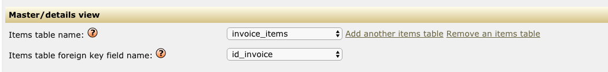
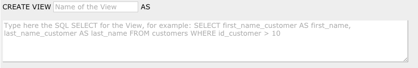
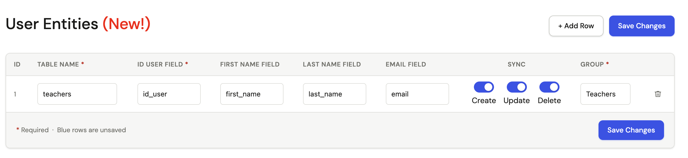
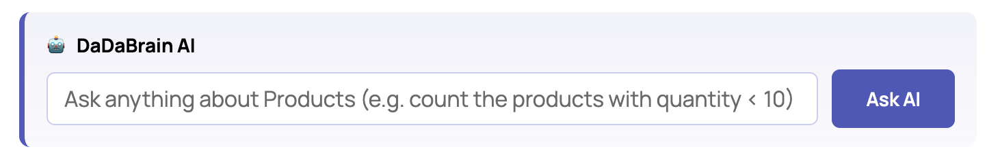

Latest release: 13.6 Levanto (released Aug 27, 2026). This manual is about V. 13.6 Levanto, if you need the documentation for a previous release please read the documentation file included in the package you downloaded; the features described in this file refers to DaDaBIK Platinum Version, some of these features might be not available for DaDaBIK Pro or Enterprise. Check the features comparison for further details.
1. What is DaDaBIK?
2. Requirements
3. License
4. Video tutorials
5. Installation & upgrade
6. The config.php and config_custom.php files
7. How to develop a DaDaBIK application
7.1. Introduction
7.2. How to configure a drop-down lookup field
7.3. How to hide a field from a form
7.4. How to manage uploaded file (images and other
files) fields
7.5. How to create a Master/Details view (subforms)
7.6. How to create a pre-filtered results grid using
VIEWS
7.7. How to create graphic reports and pivot tables
7.8. How to create PDF reports / documents
7.9. How to generate Barcodes and QR Codes
7.10. Calendar views, generate iCalendar files and synch events with Calendar Applications
7.11. How to share the same database between two or more
DaDaBIK applications
8. Authentication
8.1. Standard Authentication
8.2. LDAP Authentication
8.3. Google / OAuth2 SSO Authentication
8.4. Wordpress Authentication
8.5. Two-Factor Authentication
8.6. User entities
9. Permissions
10. How to add your custom code to DaDaBIK
(low-coding)
10.1. Calculated fields
10.2. Custom validation functions
10.3. Custom formatting functions
10.4. Custom required functions / conditional fields
10.5. Custom default value functions
10.6. The custom startup function
10.7. Standard and Custom buttons
10.8. Hooks
10.9. Row-level Custom Filters
10.10. Prepopulated search fields
10.11. Custom pages
10.12. Custom pages and dashboards
11. The BETA development mode
12. Import from MS
Excel / CSV / ODS
13. DaDaBIK Wordpress
Integration
14. DaDaBrain AI - Query your application data in natural language
15. HTTP API
16. Audit/Revisions
17. Live edit
18. Language translations
19. Performances
20. Security
21. Error Logging
22. Privacy and logging
23. Backup
24. Best Practices
25. FAQs
26. Known bugs, limitations and unexpected behaviors
27. Previous/Next buttons and page navigation bar, unexpected behavior
DaDaBIK is a no-code / low-code development platform and a Web application builder written in PHP. It allows you to easily create a highly customizable database front-end or a database-based Web application without coding. You can use it to create in a few minutes a very basic CRUD (Create, Read, Update, Delete) database front-end or to develop more sophisticated database Web applications, for example Warehouse Management Applications, CRM applications, ERP Applications, HelpDesk Applications and others.
DaDaBIK was one of the very first RAD PHP tools focused on database applications (first version released in 2001) and it is still one of the most popular.
Features include (check the features comparison for further details):
The hosting requirements for DaDaBIK are low, and the vast majority of hosting providers meet these needs.
We recommend Hosting.com, among other providers, for several reasons:
Do you want DaDaBIK installed and configured for free within 1 business day on an Hosting.com space? Click here to learn how you can get started today.
Disclosure: We may receive commissions from purchases made through the link above. However, Hosting.com is a service we’ve thoroughly tested with DaDaBIK, and we highly recommend it!
UTF8 is the character encoding strongly recommended
also for MySQL, PostgreSQL and MS SQL Server. For MySQL, it is recommended to use utf8mb4.
In particular for MS SQL Server if you need to represent Unicode characters other than ASCII, your collation must be one of the collations ending with _utf8, introduced with SQL Server 2019 (and available on Azure as well). nchar, nvarchar and ntext fields are not supported by DaDaBIK: you can use them but DaDaBIK won't add the "N" prefix to the queries so you can't represent Unicode characters other than ASCII. Text fields are also not supported to represent Unicode characters other than ASCII (and they are deprecated in SQL Server anyway), you should use varchar(max) (+ _utf8 collation) instead.
Not sure if your system matches the requirements? Most probably it does, but if you want to be sure before buying contact us and we will check it for you.
DaDaBIK is released under the DaDaBIK license and its use requires to purchase a regular license starting the purchase from the Website www.dadabik.com and completing it through the reseller Fastspring.com. After having purchased a license, you can find the text of the license in the file dadabik_license.txt. For some of the files that compose the DaDaBIK package, you get the full source code and you can modify it
[back to top]On our YouTube channel you can find a beginner video tutorial and some more advanced tutorials in the series "How to create a Web Application with DaDaBIK"
If you'd like us to install DaDaBIK for you, we offer a free installation service on Hosting.com spaces. You can have DaDaBIK fully installed and configured within 1 business day at no extra cost—you only pay for the hosting plan.
Click here to learn more about how to get started with Hosting.com and our free installation service.
If, instead, you want to install DaDaBIK by yourself, follow these steps.
In this tutorial (installation chapter), you can see a step-by-step installation of DaDaBIK.
You can easily upgrade to the latest version without losing your application's configuration if you are running at least version 5.0:
After the execution of the upgrade procedure or in case you decide to cancel it, for security reason you have to delete the files up.php and up2.php from your DaDaBIK folder.
In case you have also changed the edition (e.g. from DaDaBIK Pro to DaDaBIK Platinum), after the execution of the upgrade procedure you must change the serial number in config_custom.php using the new serial number you got.
In case you have installed a prepackaged app (Dada HelpDesk, Dada sales) you can upgrade it using the same procedure, however only the DaDaBIK engine will be upgraded: if the app itself has been improved you won't see those improvements/fixes after a simple upgrade.
Here is a video where you can see the upgrade process in action:
The one just described is the new easy upgrade procedure; below we'll describe the old upgrade procedure, that is still available in case you prefer it.
You can upgrade to the latest version without losing your application's configuration if you are running at least version 5.0:
After the execution of the upgrade procedure or in case you decide to cancel it, for security reason you have to delete the files install.php, upgrade.php, upgrade2.php, up.php and up2.php from your DaDaBIK folder.
In case you have installed a prepackaged app (Dada HelpDesk, Dada sales) you can upgrade it using the same procedure, however only the DaDaBIK engine will be upgraded: if the app itself has been improved you won't see those improvements/fixes after a simple upgrade.
Please note that, due to SQLite limitations, the upgrade script (both new and old procedure) is available just for MySQL, PostgreSQL and MS SQL Server.
You can upgrade from DaDaBIK PRO to ENTERPRISE or PLATINUM following the
same instructions of the previous paragraph ("Upgrade from previous
version"); this also applies if the version number is the same (e.g. you
want to upgrade from DaDaBIK 11.12 Pro to DaDaBIK 11.12 ENTERPRISE).
The folder /include contains two important files: config.php and config_custom.php. The config.php file contains some parameters that DaDaBIK requires before its installation and other, optional, configuration parameters.
The required parameters that you must specify are:
Starting from version 10.4, you can no longer edit the config.php file directly, you must specify the value of your config parameters (required and optionals) in config_custom.php. You can use the config.php file just as a (read-only) documentation file, where you can see all the parameters available and their possible values.
For example, let's say your timezone is "Europe/Rome", you are using MySQL on localhost, user "silvia" and password "98u$78jjh" and you want to install DaDaBIK in the database "test_db"; this should be (at least) the content of your config_custom.php file, before installing DaDaBIK:
If you are new to DaDaBIK, we recommend to also add these two additional parameters:
... and also these two ones (they allow to create/alter/drop tables directly from DaDaBIK, so first read the security implications in config.php):
To summarize, the easiest thing you can do is:
Some additional notes or common mistakes:
After having installed DaDaBIK, you can set some very general configuration parameters from the file /include/config.php, just by opening it with a plain text editor and editing it. The file is self-explanatory. At that level you can, for example configure some DaDaBIK features (e.g. authentication, upload, email notices, language, ...).
For a more analytic tuning, however, you will use the DEV Area ("EDIT this app" button on the top right corner), where you can:
The DEV Area is also self-explanatory, so you can read most of the instructions on how to configure DaDaBIK by clicking on the help tooltips available in the DEV Area itself. That's the reason why we kept this manual short, you will find everything you need about configuration in the admin section. Here we will only focus on documenting a few typical use cases:
See the related following paragraphs for further details.
If you are configuring a DaDaBIK application that is already publicly accessible, it's a good practice to set $maintenance_mode = 1 in config.php, in this way only administrator users can access the application.
Some graphic customization can be done by changing the files /include/header.php and /include/footer.php and by editing the CSS file /css/styles_screen.css. In addition, the datagrid HTML templates feature allows you to deeply customize the appearance of your item results page.
If you want to customize the sentences used by DaDaBIK you can create your own custom language file, see Language translations later
A lookup field is a field whose value is bound to another value in a source data table. For example let's say you have a table customers having, among the others, the fields address and city. Instead of setting the the field city as textbox, you want to provide the user a drop-down list which takes its values from a table cities having as fields ID and name. All you have to do is setting the following values (in the forms configurator), for the field city in the table customers:
Configuring the field in this way, for the field customers.city you save in your database the ID of the city but you show to your users the name of the city. Also, you limit the options available to the cities you have in the table cities. The field customers.city needs to have the same database type the field cities.ID has, so if the ID is INTEGER, customers.city needs to be integer as well.
The select_single (drop-down list) is not the only DaDaBIK field compatible with the lookup approach: you can also use radio buttons, a list of checkboxes or a drop-down multiple select: all you have to do is selecting the right DaDaBIK field type: instead of select_single you need, respectively, select_single_radio, select_multiple_checkbox or select_multiple_menu.
It's worth mentioning that you are not limited to one linked field, you can add as many linked fields as you want. Let's say the table cities contains also the name of the region each city belongs to: cities (ID, name, region_name); you can add region_name as an additional linked field so that users will see in the drop-down menu not only the name of the city but also the name of the relative region.
If the user has insert permissions on the lookup table, a + button is displayed close to the dropdown menu, allowing the user to add a new option to the menu without leaving the current form. If you have, in the same form, more than one lookup field referring to the same table and you have used the + button to add an option to one of them, the other ones are not updated with the new option (they will be when you reload the form, though).
For additional options related to lookup fields, including cascade fields, filtered lookup and the possibility to add a new item to a list on the fly, please refer to the in-line helps available for each parameter in forms configurator.
Related videos:
Hiding a field from a form or from the results grid is very simple: let's say you have a field salary in a table employees and you want to show the field only to some of your users, the users belonging to the group human resources. From the permissions menu of the admin section, choose employees as a table and, for each group, set the permissions: you probably want to set, for all groups except from admin and human resources, the permissions to NO for all the operations: RESULTS, EDIT, CREATE, DETAILS, QUICK SEARCH and SEARCH; the effect is that DaDaBIK will never show the field, the field will be excluded from the results grid, from the edit form, from the "create new" form, from the details page, from the quick search form (the boxes on the top of the results grid) and from the search form.
Please note that normally if you have a field which is auto-increment, you need to hide it form the CREATE form since the value needs to be assigned automatically from your DBMS (MySQL, PostrgreSQL, SQLite, MS SQL Server) and not entered by the user.
The permissions menu is used to set the presence of fields, as explained above, only if granular permissions are enabled (parameter $enable_granular_permissions in config.php), which is the default settings. If granular permissions are disabled, you can choose to hide a field directly from the forms configurator, in this case you set the presence of a field globally, for all the users.
DaDaBIK has two file field types: generic_file and image_file; both the field types generate in insert/edit forms an upload control that allows users to upload files. The difference between the generic_file and the image_file lies in how the file is displayed in the results grid and in the details page: for image_file fields, the actual image is displayed (using the img html tag), for generic_file fields, a link to the file is displayed.
To use the upload function you have to set $enable_uploads = 1 and set the proper $upload_directory in config.php; the files uploaded, in fact, are not stored directly in the database but in the file system, the database stores just a reference to the file. From config.php you can also set the upload allowed file extensions and the size of the image thumbnails to show in results grid and details page. Please note that DaDaBIK automatically assigns a unique file name to the file the user uploads, that can be different to the original one. You should also consider that some particular characters (that have a special meaning) in a file name can make PHP misinterprets the file name, e.g. the filename "my\test.txt" will be seen as just "test.txt"
You should protect the upload directory from public access, read the security chapter of this documentation file for further information.
In this video you will see, step by step, how to manage files upload in DaDaBIK.
A Master/Details view (also called subform) is an edit form (or a details page) that shows not only the details of a records but also one or more result grids displaying related records from other tables.
A typical example is the representation of an invoice (or an order):
Invoice n. 1 date 08/04/2017
Customer Bob Smith
Description
Product Quantity Price
iPhone 7 1 700
USB Key 2 20
Total: 740
You probably represent the information using two tables:
invoices
| id_invoice |
number_invoice |
customer_invoice |
date_invoice |
| 1 | 1 | Bob Smith | 08/04/2017 |
invoice_items
| id_invoice_item |
id_invoice |
product_invoice_item |
quantity_invoice_item |
price_invoice_item |
| 1 |
1 |
iPhone7 |
1 |
700 |
| 2 | 1 | USB Key | 2 | 20 |
(you probably want to store information related to products in a third
table but let's keep the example simple)
The best way to represent this data in a DaDaBIK application is to create a master/details view with invoices and invoice_items: from the form configurator select id_invoice (the primary key of the invoices table) and add invoice_items as master/details, selecting id_invoice as foreign key:

You can add as many details
tables as you want to the same master.
Related video, master/details chapter :
Sometimes you want to show to your users a pre-filtered version of your data. Let's say for example you have a table products containing a field quantity_product, which stores, for each product, the quantity you have in your warehouse. If the table products is installed in DaDaBIK, it can be accessed from a menu item products and users can also execute search operations over it, for example, through the search form, they can ask to see only the products having a quantity value less than 10. If you realize that such query is quite common, you might want to offer to your users a direct access to the products having a quantity value less than 10, without forcing them to perform a search operation every time. You can do this using VIEWS.
A database view, informally, can be defined as a "virtual table" which is based on a real table; for example we can create a view products_low_stock based on the table products with this simple SQL statement:
The view products_low_stock can be installed in DaDaBIK as it was a normal table and therefore you can assign to it a menu item that allows users to directly access the products with low stock level in one click, without performing a search operation. Every time you access the view products_low_stock, your DBMS implicitly execute the query "SELECT * FROM products where quantity_product < 10" and provides you with the up-to-date results.
You can create a database view directly in DaDaBIK, admin section, data tab:
Database views in DaDaBIK do not inherit table, field, or row-level permissions from the underlying tables. Permissions for views must be configured explicitly, independently from the source tables.
Similarly, views do not inherit form configuration settings (such as field types, formatting functions, or display options) from the original tables, even when they are based on tables that are already fully configured.
For additional information about database views, the Wikipedia entry is simple and quite informative: https://en.wikipedia.org/wiki/View_(SQL). A creative use of database views can help you in the process of creating very complex DaDaBIK applications.
In this video chapter, you will learn, step by step, how to use VIEWS in DaDaBIK.
(DaDaBIK Enterprise/Platinum only)
DaDaBIK allows you to easily create graphic reports and pivot tables from the results grid of any page based on tables or views. You can choose from various chart types, including: Bar charts, Line charts, Pie charts, Doughnut charts and Stat cards
DaDaBIK supports two types of reports: simple reports and advanced SQL reports. You can create a simple report in a few clicks by selecting the field for the X-axis and the field for the Y-axis. Normally you want to aggregate data according to a field, show each group on your X-axis and and show some aggregate function (like COUNT or SUM) value on your Y-axis.
For example you might want to see the age composition of your customers: in this case you would choose to aggregate data by age and to show, for each group, the number of customers of that age (selecting the count option).
A slightly more complex example: you have a table sales containing, among the other information, the date of the order and the amount. You want to see your revenues, month by month. In this case you need to choose month month - date_order for the X-axis and sum - amount for the Y-axis.
stat cards work differently from the other chart types: they display a single, aggregated value for the entire dataset, without grouping. For example you may want to count the total number of customers or the average age of your users. There is no grouping involved in stat cards; they simply display one value derived from the full record set.
If you need more freedom, you can use the advanced SQL reports: you can specify your own SQL query, include a where clause, joining several tables and so on. The only constraints you have is: the query must be a SELECT statement where the first element you select will be used for the X-axis of the graph, the second element for the Y-axis.
Here is an example: let's say we have the following tables:
sales (id_sale, date_sale, customer_sale) - each sale can have several sale items:
sale_items (id_sale_item, id_sale (FK), id_product FK), quantity_sale_item) - each sale item refers a sale and a product
products (id_product, desc_product, price_product)
we want to show, for each month, the total revenues; here is an example of custom SQL report for MySQL:
If you have created a report and you want to easy access it later from the menu in one click, you can simply copy the URL you see in your browser when the report is displayed and create a custom page (having type = link) that points to this URL. Please note that, if the report has been generated after a search, the search filter is not saved together with the link. If you need to store a report based on a stable search filter, the best way is to create a VIEW and generate the report starting from that view.
What has been explained for graphic reports is also valid for pivot tables: starting from the results grid of any page based on tables/views you can create a pivot table where you can represent, in a tabular fashion, your data, aggregated according to a criteria.
(DaDaBIK Enterprise/Platinum only)
Starting from the details page or from the results grid of any page based on tables/views you can create a a PDF report/document by clicking the PDF button. If you are in a details page, DaDaBIK will create a PDF document containing the information related to the record you are viewing; if you are in the results grid, DaDaBIK will create a PDF document containing the information related to all the records included in the current results set.
Please note that, in order to use this feature, the parameter $export_to_pdf_feature needs to be set to 1 in config.php (by default, it is set to 1); furthermore, the parameter $pdf_max_number_records allows you to control the maximum number of records you want to export: since the PDF export is a resource-consuming activity, if you have a table with a huge number of records you might want to limit the export to a specific number of records: users could launch the export on the entire table (without filtering it) and cause a system freeze.
If you launch the PDF generation without selecting a template (or selecting "No PDF template") from the template dropdown menu, DaDaBIK will apply a standard template: for each record, a row containing the field label (in bold) and the field value will be displayed for each field you have in your details page or results grid.
You can, however, create your own template, choosing the position of the fields, adding graphic elements, text or any other content you might want to add to your PDF.
In DaDaBIK, the generation of a PDF document is handled by the well known TCPDF library; in particular by using the writeHTML method (see the documentation of the TCPDF class for additional details on the method), that converts an HTML page to a PDF document trying to preserve the graphic layout.
If you want to create a custom template, you have to create a file having extension .html and save it in the /templates folder: the file is just a standard HTML page that reproduces, in HTML, the PDF document you would like to get. A DaDaBIK template has two peculiarities respect to a normal HTML page:
For example, let's say we have an IT Help Requests application where users can add their help requests and we want to provide a printed version of each request, which includes our logo, some of the fields displayed in a tabular fashion and a signature request for the manager: here is a very simple template that could satisfy our needs:
A template can be much more sophisticated and it can include (internal) CSS as well. While the final result is not guaranteed (some HTML tags or CSS attributes might be not supported by TCPDF), the TCPDF library tries to preserve your HTML layout as much as possible and does a very good job.
Once you have created your template and saved in the /templates folder, the template name (the part of the filename before .html) will appear as an option to choose in the template dropdown menu.
Please note that, if you are producing a PDF document starting from a master / details view, only the master part of the view is converted in PDF.
If one of the fields you use in your template has content type: HTML or field type: rich editor, you can experience unpredictable results in the PDF produced. TCPDF might in fact misunderstand some characters, such as < or >, considering them as part of a tag; for all the other field types/contents DaDaBIK converts those characters in the corresponding HTML entities so you won't experience such problem.
By default, for each table/view, users can export to PDF using any of the custom templates you have in the /templates folder: the user can choose from a dropdown menu after clicking the PDF button. You can, however, optionally, assign one or more specific templates to each table, forcing the use of such template(s) by setting the $table_pdf_templates array in your config_custom.php file.
In this example we assign to the customers table the customers_template_new template; to the table products the products_template_2025 and products_template_2026 templates and finally to the calendar table the calendar_template_year template, also assigning a label for the PDF button.
The export to PDF feature applied to a record results set, in combination with the use of custom templates, guarantees results similar to the ones you can get using a typical "Mail Merge" feature available in Word Processors. Let's say for example that you want to send a (paper) mail to all your customers who live in a particular city: you can do it by searching the customers by city and export as PDF the results set, using a template that contains the letter and a name placeholder that will be automatically filled with the name of each of the customer.
There are still a few things you can do to customize your PDF reports / documents.
Instead of using just HTML, you can also use some PHP in your
templates. Adding PHP code to your templates opens to many new
possibilities, for example part of your template can change according to
some conditions (e.g. according to the user currently logged in).
Here is an example of template with some PHP code. The first piece of code
just adds the current date to the PDF, the second one adds a whole part of
the template ONLY if the current logged user is part of the group having
ID 2.
If you need PHP templates, remember to save your template file with a .php extension. If DaDaBIK finds in the templates folder two templates having the same name and different extensions (one with .html extension, the other with .php extension), the HTML template will be used.
If you need to display content without using dadabik_field pairs (e.g. you want to display the content of a $myvar variable) and you don't want your content to be interpreted as HTML (probably, in most of the cases, you don't), you must pass your content through htmlspecialchars (e.g. echo htmlspecialchars($myvar)), otherwise you could have unexpected results: if for example you have a < sign in your content, TCPDF might interpret it as HTML and silently stop the rendering of the page because of a rendering error, giving you the false impression that, for example, some fields are not available or the records related to a search are less than they actually are.
As we mentioned earlier, if you don't choose a template from the dropdown menu, DaDaBIK will use a default standard template; you can change the default header and footer of that template by editing the files default_header_no_template.html and default_footer_no_template.html (/templates folder): this allows, for example, to modify the CSS used by the default template.
As we mention earlier, for each custom template you have to create a TemplateName.html (or TemplateName.php) file in the /templates folder. In addition, you can create an (optional) TemplateName_settings.php file that might contain the following items:
The set_standard_pdf_parameters_custom() function overrides the set_standard_pdf_parameters() function, that DaDaBIK calls after the creation of a TCPDF object; in such function, some general characteristics of the document are set, for example margins and font (see set_standard_pdf_parameters() in /include/pdf_functions.php for details).
The pdf_custom_code_after_addpage() function is an optional function executed by DaDaBIK after the execution of the AddPage() method of the TCPDF class. In the following example the function adds a custom logo in the top left corner (coordinates 10,10), after the execution of AddPage():
The MYPDF class allows to customize even more a template, overriding some of the methods of the TCPDF class, for example the Header() and Footer() methods. In the following example the class overrides the Footer method, displaying - for the footer of every PDF page produced - a custom text in a 40x10 cell:
public function Footer() {
... your additional code here ...
$this->Cell(40, 10, 'My footer text ');
... your additional code here ...
}
}
Finally you can set here the config.php PDF parameters when you
need to override the corresponding config.php value; for example let's say
that you normally need portrait orientation, so you have
$pdf_page_orientation = 'P' in config.php; for one or more templates,
however, you might need landscape orientation, in this case you
can simply set $pdf_page_orientation = 'L'; in the related _settings.php
template file.
You can even override $export_to_pdf_feature, for example
because you want to enable the PDF export ONLY for one or some
tables/views: in this case you can keep $export_to_pdf_feature =
0 in config.php and set $export_to_pdf_feature = 1 in your _settings.php
template files. DaDaBIK won't create the standard "produce PDF" button if
$export_to_pdf_feature = 0 but you can easily create a custom "CREATE PDF"
button for the tables/views you need, a button that just redirects to
something like:
index.php?tablename=YOURTABLE&function=search&export_to_pdf=1&pdf_template=YOURTEMPLATE
Please note that to make this work you also need to set
$parse_pdf_php_template_even_if_export_pdf_disable = 1 in config.php,
otherwise DaDaBIK won't read your _settings.php template file.
The name of the PDF file produced is also something you can set in this file, using the variable $pdf_file_name e.g.:
$pdf_file_name = 'customers';
If you don't specify a name, the default one (the name of the corresponding table) will be used.
You might need to produce a PDF representing some tabular data, for example a list of products, where each product is represented as a row of the table. If you try to create a custom HTML template for this, you will fail: you can create the products.html template for the row, something like :
but you miss the starting and closing tag of the table. In these cases, when you need a template for each record and two additional templates that work as header and footer, you need to create three HTML templates; if you have a products.html template, you will also need a products_header.html and a products_footer.html template.
Here is the content of these two additional templates, product_header.html
If DaDaBIK sees that, for a custom template, the correspondent _header and _footer template files exist, it will use them.
In order for this to work, however, you also need to set $add_pdf_page_for_each_record = 0 in config.php. Why? Because by default, DaDaBIK create a new PDF page for each record, but this is not what you want if you need to produce tabular data. What if you need this behaviour only for some templates? You can just leave $add_pdf_page_for_each_record = 1 in config.php and set $add_pdf_page_for_each_record = 0 in the specific _settings.php template file where you need it, in this case in the products_settings.php template file.
Please note that according to our tests, the TCPDF library in some cases my have problems in handling grids that split across pages, resulting in missing content and/or producing documents that according to Adobe Acrobat Reader are "malformed". It seems to be related to the presence of images, but we were unable to identify when exactly the problem arises. Carefully test PDF tabular data before using it and use at your own risk.
In case you experience problems with some UTF-8 characters which are not displayed correctly in PDF, you can fix the problems by using a font that is able to display all the UTF-8 characters (the core TCPDF font used by default is not), for example freesans. You can find some instructions here: https://dadabik.com/forum/read.php?1,19987
For additional information about TCPDF, please refer to its documentation.
(DaDaBIK Enterprise/Platinum only)
DaDaBIK v13 introduced built-in support for barcode and QR code generation. This feature allows you to generate scannable code images, which is especially useful for inventory tracking, asset management, and more. These images typically serve as unique record identifiers, but they can also encode other types of meaningful data depending on your application needs.
From the form configurator set, for a table field, its field type as barcode or qrcode: DaDaBIK generates a visual barcode or QR code for each record, without storing any image on disk or in the database. These images are rendered dynamically based on the data of the record.
By default, DaDaBIK encodes the following value into the code:
[TABLENAME]_[UNIQUEFIELD]
Example: for a table named customers and a record with ID 12, the value will be:
customers_12
This allows to have a unique (across the DB) identifier for the record.
You can, however, override the TABLENAME_ID rule by writing a custom function: you can represent only the id ("12"), a different field value, a combination of field values, an URL (e.g. the URL to access the record's page in DaDaBIK)... For example you may want to encode a SKU, a product code, or any other business identifier. See configuration later.
The barcode/qrcode field is generated automatically and does not require user input, so it is hidden on create/edit forms.
Currently, DaDaBIK supports the following code types:
The config parameters $barcode_format, $barcode_image_format and $qrcode_size allow you to set the barcode format (e.g. TypeCode128, TypeCode39, TypeEan13, ...) the barcode image format (png or svg) and the size of the QR Code.
To override the TABLENAME_ID rule you can write your own generate_barcode_id_custom function to encode in a barcode/qrcode the value you need. The function must be written in /include/custom_functions.php and receives as input parameters the name of the table, the name of the barcode field, the name of the unique field (typically the Primary Key of the table) and the value of the last inserted ID (assuming you have auto-increment IDs).
Let's say, for example, that for a table products (id, sku, name, price) you want to encode just the content of the field "sku".
Here is the function you need to write:
You can also format how a barcode is displayed. By default, DaDaBIK shows the barcode and, under it, the encoded text; QR Codes, instead, by default are displayed without showing the encoded text. Let's say you want to display the barcode without text; here is the function you should write:
For both custom functions, $table_name and $field_name are also useful if you want to customize the logic on a per-table or per-field basis.
We strongly recommend carefully testing barcode and QR Code generation and scanning with your specific use case and data before using it in production.
In our internal testing, we observed the following limitations and edge cases:
(DaDaBIK Enterprise and Platinum only)
To display table data (for example, data from a meetings or appointments table) using a calendar layout, set the Calendar layout option under DEV AREA > Layout > Record List Layout. For those tables, two additional buttons will appear: iCal and Generate iCal URL.
The iCal button exports, for the current table, an
iCalendar file (.ics) containing the events.
If the table is filtered (for example, after performing a search), only the matching records will be included.
The generated file can be imported into any calendar application that supports the iCalendar format (e.g., Google Calendar, Apple Calendar, Outlook, Home Assistant, etc.). In addition to the fields you set under DEV AREA > Layout > Record List Layout, for each event, an URL linking the details page of the related event in your DaDaBIK application will also be exported.
The Generate iCal URL button creates a unique URL that provides the same iCalendar feed but can be subscribed to by external calendar clients. This means that other applications can stay synchronized with the DaDaBIK calendar view (including any filters applied when the URL was generated). Synchronization occurs whenever the external calendar periodically refreshes the feed — DaDaBIK provides the data, but the refresh frequency is determined by the external client. This feature is available only in the Platinum edition.
You can enable or disable these features using the configuration parameters:
$enable_download_ical$enable_ical_url$max_records_export_ical parameter.
Each event in the iCal file includes a DTSTAMP property that indicates when the event was last updated.
By default, DaDaBIK uses the actual “last updated” value from the database.
If two or more updates occur within the same second, a calendar client might not detect all changes.
If your use case requires guaranteed detection of every possible update (at the cost of more frequent syncs), set the configuration parameter $ical_timestamp_current_time 1.
When set to 1, DaDaBIK uses the current timestamp at export time as DTSTAMP for all events.
For these features to work correctly:
yyyy-mm-dd hh:mm:ss.
The $date_format configuration parameter does not affect this.Sometimes you want to build two (or more) different DaDaBIK applications which work on the same data (i.e. on the same database).
For example you want to build:
You can do it very easily following these simple rules:
For example, if we have two applications sharing the same database, here is an example of config.php files
config.php application A
$db_name = 'my_database';
$prefix_internal_table = 'dadabik_1_';
$prefixes_to_exclude[0]='dadabik_2_';
config.php application B
$db_name = 'my_database';
$prefix_internal_table = 'dadabik_2_';
$prefixes_to_exclude[0]='dadabik_1_';
If you just want to make part of your application public, you should use the parameter $username_public_user (see the Authentication chapter for further details).
Authentication is enabled by default, which means that, in order to use an application created with DaDaBIK, you have to login. You can disable authentication by setting $enable_authentication = 0 in /include/config.php; while this is not recommended, it can be useful if you want to use DaDaBIK to create a public Web site.
DaDaBIK is released with the following default users:
Admin users can not only use a DaDaBIK application but also configure it through the DEV Area; furthermore, they can add new users/groups and edit/delete existing ones.
If you want make part of your DaDaBIK application public and part private, for example you want to allow unathenticated users to read a public dataset or you want to open to the public a registration form or a contact form, you can still set $enable_authentication = 1 and then define who is the "public" user in config.php (parameter $username_public_user): unathenticated users will be granted with the permissions you assign to the group the public user belongs to.
(DaDaBIK Enterprise/Platinum only)
Optionally, you can authenticate your users against an LDAP server. DaDaBIK has been tested with both Open LDAP and Microsoft Active Directory.
From /include/config.php you have to enable $ldap_authentication and specify all the parameters required for the connection. Users who authenticate using LDAP are then copied into the DaDaBIK users table and get assigned to a default (configurable) group. The aim of the copy is to allow the permissions setting, LDAP users authentication is always performed through the LDAP server.
Mixed authentication (some users authenticate against DaDaBIK, others against an LDAP server) is also possible: during the log-in procedure, a user can check/uncheck the LDAP checkbox in order to specify if he is going to authenticate through LDAP or not.
(DaDaBIK Platinum only)
DaDaBIK now supports login through external identity providers using the OAuth2 Connect protocol. The first supported provider is Google, with others planned for future versions.
This feature allows users to self-register by signing in through a supported external provider. Once authenticated, DaDaBIK checks if the user's email address matches an existing user. If not, a new user is automatically created using basic information retrieved from the provider (email). After registration, the user becomes a regular DaDaBIK user, like any other. They will be able to log in to the DaDaBIK application through Google from that point onward.
You can enable this feature using the config paramater $enable_google_authentication (by default set to 0). See the other, related config parameters (e.g. $google_default_id_group) for further customization.
Please note that:
1) No Privacy Checkbox
Unlike the traditional self-registration process, it is not currently possible to display "Terms and Privacy" checkboxes before account creation.
2) No Email Confirmation
The system does not send a confirmation email to verify the user's address (even if email confirmation is enabled). Account creation is immediate upon successful login through the identity provider.
3) Failed Login Tracking Applies Only to 2FA
Failed login attempts are counted only in the context of two-factor authentication (2FA). If a user fails to authenticate via the external provider, those attempts are not logged as failed logins in DaDaBIK.
4) No "Forgot Password" Functionality
Because the external provider manages the user’s credentials, DaDaBIK does not provide a "Forgot Password" link for these accounts.
5) No "Force Password Change" Policy
Since authentication is handled externally, DaDaBIK cannot enforce password changes for users who log in through identity providers.
If DaDaBIK is integrated into a Wordpress site, users authenticated through Wordpress can also be (optionally) automatically authenticated into DaDaBIK too, without doing the log-in again. See DaDaBIK Wordpress Integration for further details.
[back to top]Admins can enable, individually for each user, Two-Factor authentication (by default it's disabled). If enabled, after email+password check, users need to provide a verification code generated by Google Authenticator or any other app compatible with the TOTP algorithm.
To generate the QR Code, the API of qrsever.com is used. When the QR Code is generated, the following information are sent to qrsever.com: the username of the user, the name of the app ($two_factor_auth_app_name) and the TOTP secret. Being an HTTP(s) call, other information (for example your IP address, your browser, your OS) could be potentially stored by qrsever.com.
Before starting to use 2FA, you need to set the config parameters $encryption_key and $two_factor_auth_app_name.
The config parameter $show_2fa_secret_code_text allows to set wheather to display the secret key as text in addition to the QR code during the user's first login. By default, this is set to 0 (disabled).
If you use HTTP API calls to login, you can still authenticate with uesrname+password only, even if 2FA is enabled for the user.
If you use Wordpress to login, the WP authentication is enough to login, even if 2FA is enabled for the user.
(DaDaBIK Enterprise/Platinum only)
In this video, you will see user entities in action.
In most applications, users are managed directly through the Users section of the application.
However, in some applications, the people who access the system also correspond to records in a business table. For example, in a school management application, you may have a students table containing student information, and each student is also a user of the application.
In these cases, you can define the table as a user entity.
A user entity is a table whose records correspond to application users. In practice, the table acts as an extension of the user account, storing domain-specific data while authentication and permissions remain managed through the Users section.
Typical examples include tables such as:
Each record in the entity table is linked to exactly one user account.
A user entity defines a link between the entity table and the corresponding user account.
students.id_user → users.id_userThis means that each entity record (for example, a student) is associated with a specific user account.
When configured, DaDaBIK can automatically:
Note that the relationship works only in this direction: creating a user directly from the Users section does not create a corresponding entity record.
When synchronization is enabled, changes in the entity table are propagated to the corresponding user account.
You can configure User Entities from Dev Area > Users. For each user entity, you must define at least:
1) The field that links the corresponding user in the users table (ID USER FIELD in the form below)
2) The related user group (GROUP in the form below).
You can optionally set how first name, last name and email map to the related fields in the users table and you can enable create, edit and delete sync.

User entities allow synchronization of some fields between the entity table and the corresponding user account.
Typically this includes:
Create, Update and Delete sync is only triggered when the CRUD operations are executed using the standard DaDaBIK forms and grids. If for example you delete a student (user entity) using custom code or outside DaDaBIK, the corresponding user is not deleted.
When synchronization is enabled, operations performed on the entity table may automatically trigger operations on the corresponding user account.
These operations do not check the table permissions of the Users section.
This behavior assumes that, if synchronization is enabled, the developer intends to allow the necessary operations on the related user account. This approach is consistent with how permissions are handled in other DaDaBIK fatures, for example in master-detail relationships.
If Create Synch is enabled, when you create a record for a user entity (e.g a student), a corresponding user is created. DaDaBIK generates a username for the user using the first and last name, the email and the table name, depending on which info is available and considering possible duplications. In the easiest case, when both first and last name is available, the student Bob Smith will get as username Bob.Smith (or Bob.Smith.2 if Bob.Smith is already taken). The password is randomly generated and can be changed afterwards.
You can optionally provide your own custom username generation function, defining it in /include/custom_functions.php. The function name must be generate_username_from_entity_custom and has as parameters:
1) $params (an associative array containing the value of all the fields POSTed from the creation form)
2) $table_name (the name of the entity table).
And must return the generated usersname. You are responsible for checking uniqueness of usernames.
function generate_username_from_entity_custom ($params, $table_name){
.....
}
If you enable create sync, the id_user field should not be editable in the entity table. It is recommended to hide the field in the crete form and to disable it in the edit form.
Tipically, your id_user field is a select_single lookup field having as lookup table the dadabik_users table and as Lookup table primary key field the dadabik_users.id_user field.
Each entity record should correspond to a single user account. To enforce this, it is recommended to make the id_user field UNIQUE in the entity table. Associating multiple entity records with the same user account may lead to unexpected behavior.
When update synchronization is enabled and you set the first name field and/or last name field and/or email field, it is recommended to edit shared fields (such as first name, last name, and email) from the entity table (e.g. students). Changes made directly in the Users table are not synchronized back to the entity table and would lead to inconsistencies. Also, the record locking mechanism provided by DaDaBIK does not apply across multiple tables, so it cannot prevent concurrent updates between the entity table and the Users table.
The fields used for first name, last name, and email must be configured as textbox fields.
They should not use:
function_user_valuesThese features may interfere with the synchronization process.
When a user account is automatically created/updated/deleted through a user entity, the operation is performed internally by DaDaBIK.
As a result, some automation features behave differently.
The following features work normally:
The following features are not triggered:
Please note that User entities work properly only if $enable_granular_permissions is set to 1 (as it is by default).
If you do not use the User Entities feature, you can disable it for additional security by setting the configuration parameter $enable_user_entities = 0.
This prevents the feature from being used within the application.
For each table (each form and field), through the permissions manager (EDIT this App -> Permissions), you can set which operations (Read, Create, Edit, Delete and Details) are allowed.
If you disable the read permission for a table, the related item won't be displayed in the menu of the application. Remember, however, that users can still read its records if the table is used as source of a select_single/select_multiple field or as items table in a master/details view.
If $enable_granular_permissions is set to 1 (this is the default settings) in /include/config.php you can set, through the permissions manager, which operations (Read, Create, Edit, Delete and Details) are allowed for each users group on each form and field.
For example you can configure your application to allow the group "Managers" to read and modify all the forms while the group "Employees" to read all the forms and modify just some of them, or just some fields of them.
As we said for the basic permissions, if you disable the read permission for a table, the related item won't be displayed in the menu of the application. Remember, however, that users can still read its records if the table is used as source of a select_single/select_multiple field or as items table in a master/details view.
(DaDaBIK Enterprise/Platinum only)
As explained in the previous chapter, through the permissions manager you can set your granular permissions for each group / table / field combination. Especially if you are dealing with a complex application having many user groups, setting the permissions manually can be time consuming; if this is the case, you can save time setting Permissions Templates in your config_custom file.
More specifically, you can add a set of permissions you want to grant, automatically, when you add a new table or a new field to your application.
Let's see an example, let's say you have three groups: admin, managers, employees (IDs 1,2,3) and when you install a new table or add a new field you want to assign all the permissions to the admin group, all the permissions except delete to the managers group and only read permissions to employees group.
You can define a template for that, using a sequence of 6 numbers representing the table permissions (READ DELETE EDIT CREATE DETAILS CSV) and a sequence of 7 numbers representing the field permissions (RESULTS EDIT CREATE DETAILS QUICK-SEARCH ADVANCED-SEARCH CSV), where, for each number:
0 means NO
1 means YES
2 means MY (only valid for read, delete, edit, csv permissions on tables)
3 means YES, but disabled (only valid for edit permissions on fields)
Following the example above:
Every time you add a new table or a new filed, these rules will be used by DaDaBIK to automatically set (granular) permissions.
You can also set specific templates for specific tables, overriding the general rules if there is an overlap, e.g. let's say you want to follow a different rule only for the field you will add to the table "customers" and only for group 2 the edit must be disabled; this is the template rule you should add:
Also the table permissions can be table specific, so for example:
Permissions templates are integrated and complementar to the config parameter $grant_permissions_after_table_installation. If this parameter is set to 1 (the default is 0), all the permissions are set to YES for all the groups when you install a table (and, only starting from V 11.6, also when you add a field); if it is set to 2, all the permissions are set to YES, but only for the admin group.
If you define permissions templates, the rules in your templates overrides the behaviour prescribed by $grant_permissions_after_table_installation but if, for one or more tables/groups, you didn't set any rule, then for those tables/groups $grant_permissions_after_table_installation will be used.
Finally, the config parameter $grant_permissions_autoincrement_after_table_installation (see config.php for details) is also considered: if it is set to 0 (default is 1) and you are using MySQL (at the moment this parameter only works with MySQL) the permissions for an auto-increment field will be set to NO, regardless of your rules.
(DaDaBIK Enterprise/Platinum only)
DaDaBIK uses by default the dadabik_users and dadabik_groups tables to store users information, but you can also use existing user and group tables. This help the integration of DaDaBIK with existing applications.
To use your own users and groups tables, you have to configure the config parameters whose name starts with $users_table_ and $groups_table_; the integration is also possible if your users table doesn't use the same password encryption that DaDaBIK uses, in this case you have to customize the hashing functions as explained in /include/config.php
If you set your own users and groups tables and tell DaDaBIK the names of the fields to use for authentication (username, password, ... ), DaDaBIK will read users and groups from those tables when it needs it (authentication, permissions setting, ...); however you shouldn't manage (add, edit) users and group FROM DaDaBIK: there are additional fields, not useful for authentication/permissions that are available in the DaDaBIK standard users table and unless your custom tables don't have exactly the same fields, if you add/edit users from DaDaBIK you can generate errors and unexpected behaviour; check the list of the fields in /include/config.php.
(DaDaBIK Enterprise/Platinum only)
An owner permissions model is also available, it allows to set-up the application in a way such as users can:
You can enable this feature from the permissions manager; to enable it, authentication must be enabled and each table you want to protect must have a field whose DaDaBIK field type is set to ID_user. When a field is set to ID_user, the username of the current user will be automatically inserted by DaDaBIK into this field when you insert a new record. If you want to base the ownership on the group instead of the user, change $use_id_group_for_ownership in /include/config.php
Please note that you can enable the owner permissions also for VIEWS, but also for VIEWS (as for TABLES) you need a working ID_user field, VIEWS don't automatically inherit form settings from the underlying tables. In some cases, however, you cannot directly insert records into a view (the DBMS won't allow you to do it, to read some more details related to MySQL see https://dev.mysql.com/doc/refman/5.7/en/view-updatability.html) so the correct ID_user value must come from the underlying tables.
(DaDaBIK Enterprise/Platinum only)
If granular permissions are enabled (by default they are), for each user group you can set table, fields and custom pages permissions. The permissions of each user, therefore, are based on the permissions you granted to the group the user belongs to. Until V 11.6, a user could belong to one group only. Starting from V 11.7, each user has a required (main) group and one or more optional groups they belong as well. If $enable_multiple_groups_permissions is set to 1 (by default it is), the user permissions are computed taking into consideration all the groups the user belongs to (main + others) and, in case they are different, using a "most permissive" strategy.
This means that if group "Managers" has read and delete permissions on table customers and group "Directors" has read and edit permissions on table customers, the user "Alice" belonging to both "Directors" and "Mangers" will have Read, Delete and Edit permissions on table customers. The same for fields and pages permissions. For example if group Directors has create permissions on field customers.firstname but not on customers.lastname and, viceversa, group Managers has create permissions on field customers.lasetname but not on customers.firstname, Alice will have create permissions on both fields. You can check the resulting permissions for each user in the new Permissions -> Show user Permissions page.
It's important to point out that the resulting field permissions don't take into consideration table permissions. For example let's say that group "Managers" has edit (table-level) permissions on table customers and group "Directors" has not. Field-level, Managers has edit permissions on fields firstname and lastname but not on field phone_number, while Directors has edit permission only on phone_number (even if it hasn't edit permission on table level, which is an odd situation but it is possible). If Alice belongs to Directors group only, she won't get edit permissions on customers, however if she belongs to Managers group as well, she will get edit permissions on table customers, on firstname, lastname AND phone_number as well.
For the admin group (by default the group having id_group 1) you can assign table/field/pages permission as for the other groups but in addition the members can also edit the application and read/insert/edit/delete other users/groups. A user gets these additional permissions only if their main group is the admin group, if you add the admin group as additional group, only table, field and pages permissions will be inherited.
[back to top]Almost all the features we have seen so far don't require any coding (no-code), and in fact you can build an entire Web application without any coding. However in some cases you might want to enrich your application by adding your own PHP/HTML/Javascript code. That's what we call low-code: you don't have to code your application from scratch, you can build most of the application without coding, using the form configurator, the permissions manager and the other tools provided by DaDaBIK and then you add your code to implement some peculiar aspect of your application.
In DaDaBIK you can inject your code in several different ways, for example through custom pages, custom buttons, hooks, calculated fields, custom validation functions and others. In the following chapters we'll cover each of them. Here, we'll see just some general guidelines you should use when you add custom PHP code. If you are new to DaDaBIK, it's probably better to read the next chapters first (calculated fields, custom validation functions, ... ) and get a little familiar and then come back here later.
Feel free to use the style you prefer, you should think about DaDaBIK as a framework that provides you, as a black box, some pre-built typical components; you build on the top of those components.
An important note related to spaces and tabs, though: when you define a custom function, don't add spaces or tabs in front of the definition:
DaDaBIK provides a few global variables that you can use in your own custom code:
In case the authentication is disabled, $current_user and $current_id_group are set to 'nobody' and $current_user_is_administrator to 0.
You might need to use $_POST $_GET and $_COOKIE variables in your custom code. DaDaBIK automatically escapes all the values coming from $_POST $_GET and $_COOKIE (e.g. on MySQL "tes't" will become "tes\'t"), please consider that when you use those variables in your custom code. For databaes queries, in particular, if you use prepared statements (and you should), you should unescape those values (using the DaDaBIK function unescape() ) before using them in your bind_param_db functions. Don't use unescape() on values that have not been escaped.
For historical reasons, however, in custom PHP pages, $_POST, $_GET and $_COOKIES are not automatically "escaped" for your queries (so a string POSTed as "tes't" will remain "tes't", regardless of your magic_quotes_gpc settings), we suggest to use prepared statements which don't require explicit escaping for field values.
So, just to summarize: in custom pages "tes't" coming from $_POST, $_GET or $_COOKIES will remain "tes't"; in all the other cases (custom validation functions, custom formatting functions, calculated fields, ...) the quote (') will be automatically escaped. This is happening regardless of your magic_quotes_gpc settings. Please note that the automatic escape we are talking about here impacts on your code if you directly use the $_POST $_GET and $_COOKIE variables, if you use the parameters provided to your functions by DaDaBIK (see $params later), the value you get is exactly the one the user inserted.
We suggest to use the $conn PDO connection mentioned before and to use prepared statements.
In your queries, each field and table name must be surrounded by quotes (e.g. SELECT * FROM `customers`); you can use the global $quote variable, which contains the correct quote character according to your DBMS.
When a user enters a record in edit mode, DaDaBIK "locks" the record so that other users cannot modify it using the DaDaBIK edit feature and when the user clicks on "SAVE", DaDaBIK checks if the lock is still available (in fact after a certain amount of time the lock is releases). This prevents conflicts and data loss. However, if, with your custom queries, you modify a record, there isn't any check related to locking, consider that when you create your custom code. At the moment the only case case where you can easily check the lock status before modifying data with your custom code is a button in the edit form: check, in the custom buttons chapter, the dadabik_change_status function to see an example. We will provide in the future other tools that you can use in your custom code to check the lock status of a record and to check if someone changed a record since the last time the current user saw it.
When you execute SQL in your custom code (even when Custom Code API is used, see later), permissions are not checked: e.g. if user Anna doesn't have delete permissions on table customers, she can't delete records form the application interface (she doesn't even see the delete button), however, if you delete a record from customers using custom code, the record is deleted even if Anna is logged.
As you will learn in the next few paragraphs, you can add your own custom functions in custom_functions.php and in all the files contained in the custom_functions folder. For security reasons, it's important that you write there only function definitions. If you write additional code, external to your functions, such code could be executed by an attacker by directing calling the files. This is true for any DaDaBIK file you want to modify adding your code, except from the files you use to build custom PHP pages, for those files, if you edited them following the instructions, DaDaBIK checks if the script is being executed directly, outside DaDaBIK, and in case it stops the execution.
To make your custom code leaner and more secure, you should use, when fits your needs, the Custom Code API. At the moment the API consists of seve methods: get_record_details(), update_records(), insert_record, count_records(), delete_records(), load_table_page(), load_custom_page(). The functions are static methods of the ddb_api class, therefore you must call them using this syntax:
In one code line you can get the field values of a record belonging to any of the tables you have in your database, without directly executing SQL queries. Let's say that in one of your custom functions you need first and last name of the customer having ID 2; instead of executing an SQL query, you do:
Where the first parameter is the table name, the second the name of a unique field and the third the value of such field. You will get an associative array containing the value of all the fields, so for example you'll find first and last name in $customer_info['first_name'] and $customer_info['last_name']. In case more than one record matches your query (this should never happen if you use a unique field) an error is triggered; an error is also triggered if no records martchs your query (unless $return_false_if_no_results is TRUE).
Please note that a preliminary version of get_record_details() was released with DaDaBIK V 11.7, it was not a method of the ddb_api class and therefore you could use it by simply calling get_record_details(); to guarantee backward compatibility, only for this API method, it is still possible to use it that way.
Update one or more records of the table $table_name (matching a $field_name / $field_value pair) assigning new values (array $fields_to_update_values_ar) to one or more fields (array $fields_to_update_ar). In the following example, we update the record having id_customer 10 in the table customers, assigning '2299 Piedmont Ave.' and 'Berkeley' to the fields address_customer and city_customer, respectively.
Since id_customer is a unique field here, you will update max one record, if your condition matches more than one record, you will update all the matching records.
When you call update_records():
Insert a record in the table $table_name assigning values (array $fields_to_insert_values_ar) to one or more fields (array $fields_to_insert_ar). In the following example, we insert a record in the table superheroes, assigning 'Spider-Man' and 'Peter Parker' to the fields name_superhero and secret_identity_superhero, respectively.
When you call insert_record():
The insert_record() method returns the value of the DaDaBK unique field (tipically the primary key of the table) of the record just inserted. To get the correct value returned, the field must be auto-increment (with PostgreSQL, however, it also works with a non auto-increment field).
Delete (one or more) records from the table $table_name matching a $field_name / $field_value pair. In the following example, we delete from the customers table the customer having id_customer 10.
Since id_customer is a unique field here, we will delete max one record, if your condition matches more than one record, you will delete all the matching records.
When you call delete_records():
Returns the number of records matching a specified $field_name / $field_value pair in the $table_name table. In the following example, we count the number of customers whose city is "Bologna".
Load a page (based on a table/view), optionally displaying a message. $id_value is used to identify a specific record, if needed.
Parameters:
$table_name: name of the table or view
$page_type: 'results_grid'|'edit'|'details'|'insert'|'advanced_search'
$id_value: for edit and details pages, the value of the unique field of the record you want to select
$message_text: the messasge to display, if any. A corresponding $txt key must be available in the language file. The key can't contain spaces or quotes.
$message_type: 'success'|'warning'|'error'
Load a page (custom PHP or HTML page), optionally sending some custom additional input.
Parameters:
$id: the ID of the page to load
$additional_input: optional string containing any value you may need to pass via GET to the page
DaDaBIK set the PDO ATTR_STRINGIFY_FETCHES attribute to TRUE:
this means that if you use the main DaDaBIK PDO connection, you will always get PHP strings when you fetch records from the database, even for numeric database fields.
(DaDaBIK Enterprise/Platinum only)
A formula field in DaDaBIK offers a no-code, simplified alternative to calculated fields, allowing dynamic field values without custom coding. Within the form configurator, each field can optionally include a formula. For instance, in a product catalog table that includes name, price, and discount for each product, a final_price field can be set up with a formula to calculate the final price, including taxes:
({price}-{discount}) * 1.05
In this case, the formula calculates the final_price with a 5% sales tax.
Formula fields support a variety of operations and functions:
Field Placeholders
Use {field_name} to reference the current form's field values. For example, {price} will dynamically insert the value of the price field.
Linked Record Placeholders
Access linked table values with {table_name.field_name} syntax. For example, if a products table has a brands lookup through the id_brand field, {brands.website} will use the website field of the related brand.
Aggregate Functions
Aggregate functions like SUM(), COUNT(), MIN(), MAX(), and AVG() allow calculations on records in a master/detail relationship with the current record. See the example below (Aggregating Data) for more details.
Math Operations and Parentheses
Basic mathematical operators are supported: +, -, *, /, and parentheses for grouping operations.
Date Functions
DAY(), MONTH(), YEAR() for extracting date components. (MySQL and MS SQL Server only)
DAYS_DIFF() to calculate the difference in days between two dates. (MySQL only)
Aggregating Data
For a scenario with invoices and invoice_items tables in a master/detail relationship:
invoices: id, date, id_customer, amount
invoice_items: id, id_invoice, product, price, quantity
To automatically calculate amount in the invoices table, you can set this formula:
SUM({invoice_items.price} * {invoice_items.quantity})
DaDaBIK will then update the amount in invoices each time a record will be inserted, updated or deleted from invoice_items. This, however, only happens if we add/update/delete from the items table in the master/detail form. If we open invoice_items as "standard" table (from the left menu or calling it by its URL), amount will not be updated.
Using Linked Record Placeholders
In a car rental system with a rents table:
rents: id, id_car, id_customer, date_start, date_end, amount
A formula for calculating amount could be:
DAYS_DIFF( {date_end} , {date_start} ) * {cars.price} * (100 - {customers.discount} ) / 100
This formula calculates the rental cost by determining the rental period in days, multiplying by the car's daily price, and applying the customer’s discount.
If your formula is complex and cannot be represented using the standard functions and operators available in formula fields, you can use calculated fields. Calculated fields allow you to write custom PHP functions to return the desired calculated value, enabling you to express very complex logic. With calculated fields, you can query the database using custom SQL, call external APIs, or perform any other operations possible in PHP.
A calculated field is a form field whose value is not directly entered by the user but is calculated according to a function.
For example you might have a table products containing the fields price, tax, total_price and you want the field total_price to be computed as price + tax. To get this results, you just need to fill - for the field total_price in forms configurator - the parameter "Calculated field function", setting the name of a custom function that will handle the calculation, for example dadabik_get_total_price. Then you need to write the function's code in /include/custom_functions.php. Here is an example of the simple dadabik_get_total_price:
As you can see, we have checked if the input values are NULL or empty ( '' ) before performing the addition. This is particularly useful in the insert form: when you open an insert form, total_price_product is immediately calculated according to the values of price_product and tax_product you have in the form, but if you have just opened the insert form, they would be empty.
Here are some rules you should consider when you write a calculated field function.
In this video chapter you will learn, step by step, how to use calculated fields in DaDaBIK.
DaDaBIK, by default, validates input data according to the field type/content. For example, if a field is set as email, DaDaBIK will throw an error if a user tries to insert a non-valid email. However, you can write your own validation function and tell DaDaBIK, in form configurator, to use it for a specific field. You can write your custom validation function in include/custom_functions/custom_validation_functions.php or, if you prefer, in the general include/custom_functions.php file.
In this simple example we just check if the value of the field quantity_product is between 0 and 30:
Here are some rules you should consider when you write a custom validation function.
In this video chapter, you will see an example of custom validation function.
DaDaBIK, by default, formats data according to the field type/content. For example, if a field is set as url, DaDaBIK will show, in the datagrid view and details view, its value as a link. However, you can write your own formatting function and tell DaDaBIK, in form configurator, to use it for a specific field. You can write PHP or Javascript custom formatting functions. Custom formatting functions are only for formatting: they do not affect stored values in the database.
In this simple example we format the field last_name_customer to be displayed in red.:
Here are some rules you should consider when you write a custom formatting function.
In this video chapter, you will see an example of custom formatting function.
You can write Javascript formatting functions directly in the form configurator. A JavaScript custom formatting function allows you to dynamically change how a field value is displayed (in the results grid and details page), using custom client-side logic.
This feature is useful when you want to enrich the visual presentation of data — for example, by adding emojis, colors, labels, or context based on other field values.
The JavaScript function has access to:
value → the current field’s value
record → an object containing all field values of the current record
Example #1: Add a dollar sign in front of the value.
You can set a field as required (yes/no) in form configurator, without writing any code. However, sometimes you want to decide if a field is required according to some logic (e.g. according to the value of another field); in these cases, you should use a custom required function. The same function can be also used to specify if a field should be displayed or not in your insert and edit form: again, normally you can do it simply by setting its permissions (e.g. insert = yes) but sometimes you need a more complex logic (e.g. show the field B in the insert form only if the field A is > 50). You can write your custom required function in include/custom_functions/custom_required_functions.php or, if you prefer, in the general include/custom_functions.php file.
In this simple example, we have created a function for the field "state", which is display and required only if the country is "USA".
Here are some rules you should consider when you write a custom required function.
Starting from V. 10.5, the same function can be used to decide if you want to show a field (column) in the results grid. In order for a column to be displayed, the corresponding permissions must always be set to YES (or MY) but you might decide not to show a column even if the permissions are set to YES (or MY) according to custom rules. Here is a situation where you might need it: let's say you have a products table, having a field product_type. According to the product type, you might have a different set of fields describing the product; you might want, according to the product type the user selects as a search filter (if any) to show only the related columns.
The array $params, in this case, will contain the list of the search
filters (if any) set by the user. For example, if the user is
searching for products having price_product > 50 and type_product =
5, $params will contain the following values:
$params['select_types']['price_product'] = 'greater_than'
$params['select_types']['type_product'] = 'is_equal'
$params['values']['price_product'] = '50'
$params['values']['type_product'] = '5'
If the search filter is "between" and the user, for example, is searching for products having price between 10 and 15, $params will contain the following values:
$params['select_types']['price_product'] = 'between'
$params['values']['price_product'] = '10'
$params['values']['price_product_between____'] = '15'
If you have a field categories_product, select_multiple* field, and the user is searching for products having both the categories 2 and 20, $params will contain the following values:
$params['select_types']['categories_product'] = 'is_equal'
$params['values']['categories_product'][0] = '2'
$params['values']['categories_product'][1] = '20'
Please note that you might have in $params also references to the fields the user left blank. Eg. if for "type_product" the user left "is_equal" and an empty box, this parameter isn't used by DaDaBIK for the execution of the query, but you will see it in $params:
$params['select_types']['type_product'] = 'is_equal'
$params['values']['type_product'] = ''
At the moment you don't have as a parameter the "All the conditions required" Vs. "Any of the conditions required" search option selected by the user.
Here is an example: we want to show the field size_product only when the type_product selected is 4 (forms) or a filter type_product = 4 has been set (results grid)
As you can see, we need an additional function parameter, $page_type; furthermore,
Some additionale notes:
In this video chapter, you will see conditional fields in action.
You can set the default value for a field in the form configurator, without writing any code. However, sometimes you might need to define the default value according to a more complex logic; in these cases, you can write a custom default value function and tell DaDaBIK, in form configurator, to use it for a specific field. You can write your custom default value function in include/custom_functions/custom_default_value_functions.php or, if you prefer, in the general include/custom_functions.php file.
In this simple example we provide, for the field date_order, as a default, the current date:
Here are some rules you should consider when you write a custom default value function.
For some particular applications, you might need that DaDaBIK executes some custom PHP code every time a page is loaded. For this purpose, you can use a custom startup function: in /include/custom_functions.php you set the name of the function (if any) and you define the function itself.
In this example we have defined a dadabik_startup() function that will be executed every time a page is loaded. The function is executed after the connection to the database, so you can use the connection in your code, if you need it.
(DaDaBIK Enterprise/Platinum only)
DaDaBIK automatically displays the buttons you need to execute standard operations (e.g. the edit, delete, details buttons you see in the results grid), these are standard buttons; however, you can also add additional buttons that execute custom PHP or Javascript code, these are custom buttons.
Standard buttons automatically appear when you need them and when the current user has the rights to execute the related operation (e.g. the CREATE NEW button only appears if the user has create permissions on the current table).
For some standard buttons (namely, the SAVE button in the insert and edit forms and the INSERT AS NEW button in the edit form) you can optionally add a custom confirmation message writing some configuration code in the /include/custom_functions/custom_buttons.php file. For example, here we want to add an "Are you sure?" confirmation message to the SAVE button of the customers edit form. Only if the user clicks "ok" the operation is executed.
$button_confirm_messages['customers']['edit']['save']['type'] = 'fixed';
$button_confirm_messages['customers']['edit']['save']['value'] = 'Are you sure?';
Some use cases for custom buttons:
To add a custom button, you have to add an element to the $custom_buttons array in the /include/custom_functions/custom_buttons.php file, following the template we'll show in the example below. In the following example, we want to add a "Copy address" button next to the contact_address field of the customers insert form; that button copies the contact_address value into the invoice_address value, using Javascript.
In /include/custom_functions.php you have to write (we'll see the meaning of all the options later):
$custom_buttons['customers'][$cnt]['type'] = 'javascript';
$custom_buttons['customers'][$cnt]['callback_function'] =
'dadabik_copy_address';
$custom_buttons['customers'][$cnt]['permission_needed'] = 'insert';
$custom_buttons['customers'][$cnt]['show_in'][] = 'insert_form';
$custom_buttons['customers'][$cnt]['position_form'] =
'contact_address';
$custom_buttons['customers'][$cnt]['label_type'] = 'fixed';
$custom_buttons['customers'][$cnt]['label'] = 'Copy address';
$custom_buttons['customers'][$cnt]['style'] =
'background:#000;width:200px';
$custom_buttons['customers'][$cnt]['id'] = 'copy_address_button';
$cnt++;
Since we have set, as a callback function, a Javascript function, we have to write such function in /include/custom_functions.js
function dadabik_copy_address()
{
$('[name="invoice_address"]')[0].value = $('[name="contact_address"]')[0].value;
}
If your callback function is, instead, a PHP function, you can write it
in in /include/custom_functions.php.
Please note that, to enable custom button, you have to set
$enable_custom_button_functions = 1 in config.php.
Let's see all the options you have when you define a custom button.
type, the type of callback function triggered by the button; the available options are:
callback_function, the name of the callback function (must start with "dadabik_")
permission_needed, the permission the user needs in order to see/use the button; the available options are:
show_in, where to show the button; the available options are:
Please note that, for show_in, you can also add multiple values; for
example:
$custom_buttons['products'][$cnt]['show_in'][] = 'insert_form';
$custom_buttons['products'][$cnt]['show_in'][] = 'edit_form';
shows the button, for the products table, both in the insert and edit forms.
position_form, this parameter adds additional details about the position: if you selected show_in: results_grid, you can choose between:
for all the other show_in options you can choose "top" (at the top of
the form) or specify a field name if you want to display the button
close to a form field.
label_type, the available options are:
the label_type parameter has also effect on confirmation_message.
label, the label of the button
confirmation_message, a confirmation message you want to show before executing the callback function (pelase note that at the moment, confirmation messages containing single or double quotes are not supported).
style, CSS style (if any) to add to the button
id, this is an optional parameter, you can specify
an id and such id will be used by DaDaBIK for the HTML's id attribute
of the button. It could be useful if you need to select the button
from your custom javascript code. In more detail, the id actually used
will be "cb__" + your ID where "cb__" can be changed
in config.php ($custom_button_ids_prefix). If you are using custom
buttons at row level, the id will be "cb__" + PKvalue + your
ID instead, where PKvalue is the value, for the current
record, of the field set as unique in DaDaBIK for the current table.
Naming rules: you should use a unique id, different for each button
and the word you used for the id should not contain strings that are
not allowed for field names in DaDaBIK (see "known bugs, limitations
and unexpected behaviors" chapter, "Table and field names related"
paragraph) otherwise you can get unexpected results. Please note that
DaDaBIK doesn't do any check on the ID you choose.
Please note that, while a Javascript callback function doesn't receive any input (but you can access the form values using Javascript or Jquery) a PHP callback function receives, in input: $table_name (the name of the current table/view), $where_field (the DaDaBIK unique field name for the table/view), $where_value (the value of the DaDaBIK unique field name). The combination of $table_name, $where_field and $where_value allows to identify a specific record. In some cases (positions: results_grid top, insert form, search form), $where_field and $where_value are not set (they are set to NULL) because the button is not related to a specific record. What we have described here for PHP callback functions is also valid for the PHP function you defined as permission_custom_function.
Let's see an example of php_standard function: we want to implement in the edit form a button that changes the status of the order.
In /include/custom_functions.php you have to write:
$custom_buttons['orders'][$cnt]['type'] = 'php_standard';
$custom_buttons['orders'][$cnt]['callback_function'] =
'dadabik_change_status';
$custom_buttons['orders'][$cnt]['permission_needed'] =
'custom_function';
$custom_buttons['orders'][$cnt]['permission_custom_function'] =
'dadabik_permission_change_status';
$custom_buttons['orders'][$cnt]['show_in'][] = 'edit_form';
$custom_buttons['orders'][$cnt]['position_form'] = 'top';
$custom_buttons['orders'][$cnt]['label_type'] = 'fixed';
$custom_buttons['orders'][$cnt]['label'] = 'Approve';
$custom_buttons['orders'][$cnt]['confirmation_message'] = 'Are you
sure?';
$custom_buttons['orders'][$cnt]['style'] =
'background:#000;width:200px';
$cnt++;
Since we have set, as a callback function, a PHP function, we have to write such function in /include/custom_functions.php
Since we have set, for permission_needed, "custom_function", we also have to write the permission function dadabik_permission_change_status in /include/custom_functions.php. Let's say that our permission rule is very simple: only the users belonging to the users group having id 3 can use this button:
Please note that PHP callback functions normally are not used to produce
output; php_ajax functions, in particular, raise errors if you produce
output (via echo statements or in any other way).
Starting from DaDaBIK v. 11.1, your php_ajax functions can also return a message (for example a confirmation message or an error message) to show after the execution of the code. Here is an example of how to use the new feature:
As you can see from the example, you can also return a CSS class to use for displaying the message, built-in classes are msg_ok, msg_error and msg_alert. To guarantee backward compatibility, a message is displayed only if an associative array having the element "message" is returned, otherwise a generic "done!" message is displayed. The class is optional, the default class is msg_ok.
Custom buttons and record ownership/Row-level Custom Filters
What happens if, for a specific group, let's say the group having id 4,
you have set, for a specific permission, e.g. "Delete", the value MY? As
you probably know, users belonging to that group will be able to delete
only the records they own (see "Owner permissions" chapter). What if you
use "delete" as permission_needed for a button then? All the users
having delete permissions set to YES or MY will see the button
(regardless of the record); however, if a user clicks the button for a
record he/she doesn't own, he/she will get an error. This is valid just
for php_standard and php_ajax callback functions, though: for a
javascript callback function, all the users having delete permissions
set to YES or MY will be able to execute the function. The same thing
happens for Row-level Custom Filters.
Custom buttons and records selected by checkboxes
For a button on a results grid, you may want to execute your function
ONLY on the selected (by checkboxes) records. If, for a table TABLENAME,
the variable $_SESSION['checked_ids'][TABLENAME] is not null, it
represents the set of IDs (the values of the primary keys of the records
selected) that you can use to limit your action on the selected records.
In particular, $_SESSION['checked_ids'][TABLENAME] is an associative
array: each element represents a record that has been checked by the
currently logged user, where the key of the element is the ID of the
record and the value of the element is always 1.
For example if, for the table customers, the logged user selected two
records, having id 5 and 21, the resulting array will be the following:
Security note: don't assume that, since the user selected a record, he/she has the right to do some operations on it. Selecting (via checkbox) a record is an operation that doesn't require any permission. Through the normal application interface, a user can select only the records he/she is allowed to view, but a user could send a "fake" malicious request to include a record in the $_SESSION['checked_ids'] even if he/she cannot view it (this is by design, to keep the the operation as light as possible) so check the records before executing operations on them. Also consider that, for the same reason (we are talking about user-generated information), $_SESSION['checked_ids'] could contain malicious SQL code; to avoid SQL injections, always use prepared statements.
In this video tutorial you can see examples of PHP custom buttons.
In this video chapter you can see examples of Javascript custom buttons.
An additional related video:
A DaDaBIK hook allows you to write some custom PHP code to be called under certain circumstances.
There are two types of hooks: operational hooks and layout hooks; the first ones are triggered before/after some data operations, the second ones before / after some elements of the layout.
(DaDaBIK Enterprise/Platinum only)
DaDaBIK currently supports before insert, after insert, before update, after update, after delete, after login and after user self-registration hooks for each table installed in a DaDaBIK application, which means that for each table you can enrich the DaDaBIK workflow with your own code functions, that can be executed:
The after insert, update and delete hook functions receive as parameter the value of the DaDaBIK unique field (typically, the value of the primary key) of the record just inserted (if it is an autoincrement field), updated or deleted. If the DBMS is PostgreSQL, the unique field doesn't need to be autoincrement.
The before update hook function receives as input:
1 - the value of the PK of the record the user is updating
2- an associative array containing all the values the user
filled in the update form (where the array element's key is the name
of the field)
3- the update type ('standard', 'csv' or 'live_edit').
If the update is the result of a live edit, the associative array contains the values currently stored in the database (except from the value of the field being live-edited, which is the actual value submitted by the user); if you are using live edit in combination with before update hooks, consider that in two cases (select_multiple_* and image_file/generic_file field types) values in the database are represented in a different way respect to the original values submitted by the user from the form:
The before insert hook function receives as input
an associative array containing all the values the user filled in the
insert form (where the array element's key is the name of the field).
The before delete hook function receives as input the value of
the PK field of the record the user wants to delete. Your hook
function can optionally returns "dont_delete" to prevent the deletion
of the record (the execution of an after delete hook, if any, will
also be prevented): in this case you also need to add a custom error
messages in your language file, if the name of the funciton is, for
example, dadabik_check_delete_customer, you have to add this entry in
your language file
$error_messages_ar['dadabik_check_delete_customer_dont_delete'] =
'.... write your error message here ....';
The after login hook function ($hooks['login']['after']) receives as input an associative array ($parameters_ar) having two keys, representing the id_user ($parameters_ar['id_user']) and the id_group ($parameters_ar['id_group']) of the user who just logged in. It is triggered only by a normal login executed through the login form (standard or LDAP), it is not triggered by a login executed via HTTP APIs or via Wordpress login sharing. In case your after login hook ends with an exit() or die(), you should first commit the transaction opened by DaDaBIK adding a complete_trans_db(); code line.
The after user self-registration hook function ($hooks['user_self_registration']['after']) receives as input an associative array ($parameters_ar) having only one key, representing the id_user ($parameters_ar['id_user']) assigned to the user who just registered.
Examples
Let's say for example that, when a new order is inserted into your
orders management application, you want to automatically update your
stock: you can do it by using a hook; in particular if you store your
orders in the orders table and your products information and
quantity available in the products table, you can add an after
insert hook on the table orders and write the code
needed to update the records of the table products.
You can write your hook function in include/custom_functions/operational_hooks.php or, if you prefer, in the general include/custom_functions.php file.
Let's say we want to send an email to a specific address when a new account is inserted in our system: this is a built-in DaDaBIK feature (see parameter $enable_insert_notice_email_sending in config.php) but let's say we don't to use the built-in feature and we want to implement it using our custom code. We could, as in the following example, define an after insert hook on the table accounts, setting the function that has to be executed (dadabik_send_notice_after_accounts_insert) and after we can write the code of the function, that retrieves the name of the account just inserted and send it via email to a specific address.
$hooks['accounts']['insert']['after'] = 'dadabik_send_notice_after_accounts_insert';
function dadabik_send_notice_after_accounts_insert($id_account)
{
global $conn;
// get the name from the ID
$sql = "SELECT name_account FROM accounts WHERE
id_account = :id_account";
$res_prepare = prepare_db($conn, $sql);
$res_bind = bind_param_db($res_prepare,
':id_account', $id_account);
$res = execute_prepared_db($res_prepare,0);
$row = fetch_row_db($res_prepare);
mail ('john@mysite.com', 'New account inserted',
'A new account ('.$row['name_account'].') has been added.');
}
Let's look at another example with the before insert hook: an interesting use of the before insert hook is the modification of a value inserted by the user before the corresponding record is actually inserted, by overriding the content of the $_POST array. For example, let's say that, for the table customers, we want to capitalize the first name of the customer before insertion.
$hooks['customers']['insert']['before'] = 'dadabik_capitalize_first_name_customer';
function dadabik_capitalize_first_name_customer($parameters_ar)
{
$first_name_customer_capital =
strtoupper($parameters_ar['first_name_customer']);
$_POST['first_name_customer'] =
escape($first_name_customer_capital); // DaDaBIK expects the values
in $_POST used for the insert to be properly escaped, so in case
they aren't already (values in $parameters_ar are not) you should
use the escape function.
}
Please note that:
In this video chapter you will see examples of operational hooks.
DaDaBIK currently support:
Let's say for example that you want to display some contacts information in the footer of your application: you can do that by defining a footer 2 hook, which is triggered just before the end of the page (before the "p owered by: DaDaBIK database front-end" statement); here is an example (all your hook functions must be written in the /include/custom_functions.php file)
$hooks['custom_footer_2'] = 'dadabik_print_contacts';
function dadabik_print_contacts()
{
echo '<p>Our contact address is ..... ';
}
Let's do another example: you want to give some instructions to your users when they fill the insert form of the product table; you can do that by defining a before insert form header hook on the table products:
$hooks['products']['insert_form_header']['before'] = 'dadabik_print_products_instructions';
function dadabik_print_products_instructions()
{
echo '<p>Use this form when a new products
needs to be registered. ';
}
Please note that:
In this video chapter you will see examples of layout hooks.
(DaDaBIK Enterprise/Platinum only)
Sometimes you need to filter, according to some criteria, the records of a table/view that a user can see.
Take a helpdesk application, for example: let's say the help requests are inserted by some managers and each help request is then assigned by a manger to a member of the IT staff group; you might need to filter the requests so that each member of the IT staff can only see/modify/delete the requests assigned to them.
If your criteria is based on record ownership (who, user or group, inserted the record is the one who can see and/or modify and/or delete the record) you can use simply use the owner permissions (see later in this manual), in all the other cases, you can use row-level custom filters.
You can define simple no-code row-level custom filters from the DEV AREA > Permissions page, but if you need more complex logic you can write your own custom filters in include/custom_functions/custom_filters.php or, if you prefer, in the general include/custom_functions.php file. Let's define a row-level custom filter for a table/view:
$custom_filters['requests'] = 'dadabik_custom_filter_requests';
With the above line we are saying that we define a custom filter for the table requests and that the filter is generated by the custom function dadabik_custom_filter_requests(). Then we need to write such function, for example:
In our example we want to add, if the current user is part of the IT staff group (let's assume that the IT staff user groups has ID 3), an ADDITIONAL where clause, showing only the requests assigned to him/her (being assigned_to_request the field set by the IT manager). All the other users (not belonging to the id_group 3), instead, will see all the records.
Each field and table name must be surrounded by quotes; you can use the global $quote variable, which automatically add the correct quote according to your DBMS.
$current_user and $current_id_group are two global variables provided by DaDaBIK, they contain the username and the group ID of the user currently logged. In case authentication is disabled, the two variables will be set as "nobody".
The filter defined in the function is applied on the top of other filters applied by the user (for example by executing a search) or generated by the owner permissions (if set).
Here are a few more examples of use cases where you might find row-level filters useful:
Since you can create your own additional filter, you have a lot of flexibility; you can create very simple filters such as :
to show, for everybody, only the invoices where the field paid_invoice
is 0 (in this case, the filter is basically an alternative to a VIEW) or
complex filters based on very complex criteria / parameters, not
necessarily related to the characteristics of the user logged.
There are two situations where row-level custom filter don't apply, let's explain with two examples:
1) Customers table, edit form, field id_city (lookup field, linked table: cities). If you apply a row-level custom filter to the cities table, in the customer edit form an id_city value could appear even if it should be filtered out by the custom filter, but ONLY IF that id_city value is already stored in the customer record (to avoid blank values)
2) Customers table, results grid, field id_city (lookup field, linked table: cities). If you apply a row-level custom filter to the cities table, in the results grid of customers an id_city value (or, better, the related linked field value) could appear even if it should be filtered out by the custom filter, but ONLY IF that id_city value is already stored in the customer record (to avoid blank values).
Please note that you can use any name for the custom filter functions but the name MUST start with dadabik_
In this video chapter, you will see, step-by-step, how to use row-level custom filters
(DaDaBIK Enterprise/Platinum only)
For each table/view you can define prepopulated search field values by adding one or more $prepopulated_search_fields_callbacks in your /include/custom_functions.php file.
In this example, by default, after login, users will only see orders having a date > 2025-07-22; in addition, users belonging to the gorup 3 will only see orders for products having ID 2. Differently from row-level custom filters, prepopulated search filters will be cancelled if the user executes a search or clicks on “remove search filter” and are visible in the quick search form.
$prepopulated_search_fields_callbacks['orders'] = 'dadabik_set_prepopulated_search_fields_orders';
function dadabik_set_prepopulated_search_fields_orders(){
global $current_user, $current_id_group;
$prepopulated_search_fields['date']['search_type'] = 'greater_than';
$prepopulated_search_fields['date']['value'] = '2025-07-22';
if ($current_id_group === '3'){
$prepopulated_search_fields['id_prdouct']['search_type'] = 'is_equal';
$prepopulated_search_fields['id_prdouct']['value'] = '2';
}
return $prepopulated_search_fields;
}
Some additional notes:
1) List of the available search types:
is_equal, is_different, contains, doesnt_contain, starts_with, ends_with, greater_than ,less_than ,greater_equal_than ,less_equal_than
DaDaBIK won’t check compatibility between the search type and the field type, the developer is responsible for choosing a compatible search type (e.g. using “contains” on a date field would produce unexpected, unhandled results).
2) Search values will be populated in the quick search form but not in the advanced search form or in the omnisearch form.
3) $prepopulated_search_fields items will work regardless of the existence of the field in the search forms; e.g. if you set it for the field “name” and the field name is not available in the quick search form, the results will still be based on your $prepopulated_search_fields settings even if the user won't see in the quick search form.
4) You can’t use, for a table, the same field more than once in your $prepopulated_search_fields; this would lead to unexpected, unhandled results.
(DaDaBIK Enterprise/Platinum only)
As explained in the introduction of this chapter, with DaDaBIK, from the pages section of the administration interface, you can create pages based on a database table/view or custom HTML and PHP pages. PHP pages are custom pages running your custom PHP code and to run them you have to enable the feature from config.php ($enable_custom_php_pages = 1).
Here are some instructions to follow when you build a custom PHP page.
To avoid conflicts with the DaDaBIK engine, you must use the prefix _cp_ (custom pages) to name your variables, functions and classes, for example:
The same rule applies to $_POST, $_GET and $_COOKIES so if you create
a form that posts values using POST, a field first_name must be named
_cp_first_name instead and the value will be then available in
$_POST['_cp_first_name'].
For your local variables (variables having local scope in your functions), you don't need to follow the _cp_ naming rules.
YOU ARE RESPONSIBLE of following the above rules if you want to avoid
conflicts and unexpected behaviours by the DaDaBIK engine, currently
there isn't any check on the variable names you use. Also, please make
sure that your database field names don't start with _cp_, because
this could also lead to conflict.
You can, however, READ all the DaDaBIK variables you can access in
your scope, in particular you will find useful the following ones:
$_SESSION['logged_user_infos_ar']["id_user"] -> the ID of the
logged user
$_SESSION['logged_user_infos_ar']["username_user"] -> the username
of the logged user
$_SESSION['logged_user_infos_ar']["id_group"] -> the group ID of
the logged user
$conn -> the PDO connection link with the Database
All your custom pages need to start with the following line:
if(!defined('custom_page_from_inclusion')) { die(); }
this prevents your page from being called directly, bypassing the
DaDaBIK authentication system
In custom PHP pages, $_POST, $_GET and $_COOKIES are not "escaped" for
your queries (so a string POSTed as "tes't" will remain "tes't",
regardless of your magic_quotes_gpc settings), we suggest to use
prepared statements which don't require explicit escapinng for field
values.
If you use custom code in other situations (custom functions, hooks,
.... ), however, $_POST, $_GET and $_COOKIES are always escaped by
DaDaBIK.
Custom pages can be used to create dashboards. A dashboard is a collection of information that represent, synthetically, some key indicators of your data/application. For example a typical dashboard might contain some graphic reports that represent aggregated data and some tabular reports.
Building a dashboard in DaDaBIK is very easy: first you create a custom (PHP or HTML) page, then you embed all the reports (graphic or tabular) you want by:
INTRODUCTION
From the DEV Area, click on:
and you will access the Development Mode settings page. From there, you can set your DEV mode: LIVE or BETA.
When you are in Beta mode, changes you make in the DEV Area (e.g. you change a form or you set permissions differently) or in your custom code (e.g. you add a custom validation rule) are only visible to admins and (optionally) to other trusted users.
When you want to make available your changes to everybody, you have to Publish your changes (PUSH). After PUSHing, Beta and Live are synchronized and they will be until you make new changes in Beta mode.
Why is Beta mode useful?
Especially if you are working on complex and critical applications you want to carefully test your changes before making them public. Before DaDaBIK 12, this was typically done keeping two different instances (on two different URLs, with two different DBs) of the same DaDaBIK application: a Development instance and a Production instance. This was time consuming because you had to maintain two instances and manually synch them once your changes to the Dev instances were tested. Starting from DaDaBIK 12, you don't need this anymore, from one instance of DaDaBIK, through the Beta mode, you can test your work before deploying them to your final users.
BEST PRACTICES
If you are new to DaDaBIK, we suggest to use DaDaBIK in LIVE mode to practice. When you feel confident and after having read this documentation chapter, you are ready to use the Beta mode :)
After having switched to the Beta mode for the first time, you should use the PULL button to pull your LIVE changes to BETA. After that, your BETA is synchronized with your LIVE and you can start working on your application and deploy your changes to LIVE when they are tested and ready to be used by everyone.
Remember that the Beta mode and the Live mode run into two different "boxes", this means that if you make changes to your Beta "Box", then you switch to Live (without PUSHing first) and make changes to your Live "Box" you will have changes both in Beta and in Live, so if you PULL, you will lose your Beta changes, if you PUSH you will lose your LIVE changes.
Is Beta mode covering ALL changes made in the DEV Area?
Almost. All the changes you make in the DEV Area are covered by the Beta mode exept from:
1) Status: when you change the status (available/maintenance) of your application and the users who can access an application in maintenance mode, these changes are immediately available to everyone. This is probably expected.
2) Data page: from the data page you manage your data structures (Tables and Views) and changes you make here are made on the final (and unique) DB so immediately available to everybody. For example if you add a field "birthdate" to your customers table, the customers table will be changed and your final users will immediately use the new version of the table. Remember, however, that you can play with granular permissions (if enabled, as they are by default); even if you allow a users group to see this new field (permissions tab), they actually won't see the field before you PUSH your changes, because Permissions are covered by the Beta mode. So users will use the new versions of the Customers table (with the added birthdate field) but they actually won't see the field because of lack of permissions.
A good practice when you add a new field to a table in Beta mode is to set Nullable to yes, so the DBMS won't complain when users enter records with missing values for that field (that won't be in their form); you can then change Nullable to no, if you like, after having PUSHed your changes to LIVE.
From the Data tab you can do other operations, including dropping fields, chaning field types, adding and dropping tables and views. Remember that the result of these operations is immediately available to your final users so evaluate, case by case, the possible effects, considering that you can probably play with permissions and form configurator to avoid problems. Let's make another example: from the DATA tab, while being in Beta Mode, you create a new table, countries; you can configure the table fields and permissions and you will see the related forms as admin but your final users won't see such table, even if the database already contains it, because before PUSHing to Live, they don't have permissions to see it.
Additional example: what happens when you delete (drop) o rename a field in the Data Page? This is slightly more tricky: before you PUSH, the users of your applications may see errors because in LIVE, for DaDaBIK, the field still exists/has the old name but in the database it's already dropped/renamed. When you need to delete (drop) o rename a field, you should then put the system in maintenance status, delete/rename the fields, PUSH the changes and then put the system back in available status.
What we have just discussed in this point 2) about the DATA page, is NOT true if you enable the BETA DATABASE, an option only available for DaDaBIK Platinum that we discuss in a separate chapter (see later in this page).
How about custom code?
Custom code is also covered by Beta Mode, i.e. the code you add or the changes you make to your custom code when you are in Beta Mode are not visible to your final users until you PUSH your changes. This is possible thanks to a new set of custom code files, BETA custom code files, that you have to use instead of the standard ones:
Instead of editing /include/custom_functions.php, you must edit include/custom_functions_beta.php
Instead of editing any files contained in the /include/custom_functions folder, you must edit the corresponding file in the /include/custom_functions_beta folder
Instead of editing any files contained in the /include/custom_php_files folder, you must edit the corresponding file in the /include/custom_php_files_beta folder
Instead of editing any files contained in the /templates folder, you must edit the corresponding file in the /templates_beta folder
Instead of editing a language_custom.php file, you must edit a language_custom_beta.php file (e.g. /include/languages/english_custom_beta.php instead of /include/languages/english_custom.php)
In some cases, _beta files are already available in the standard DaDaBIK release (e.g. you will find the /include/custom_functions_beta.php), in other cases you have to create them (e.g. let's say you want to create a PDF template named "customers", you have to create both the file /templates/customers.html and the file /templates_beta/customers.html
When you PUSH your changes, all the BETA files will be used to replace the LIVE file. So if you always work in BETA mode, you should always edit ONLY the beta files.
Remember that the config_custom.php file does not have a corresponding BETA file, so changes you make on it are immediately available to your final users even if you are in Beta mode.
This should be an extremely rare situation but if, in your custom code, you directly used the dadabik_ tables, this is not handled by the Beta mode. For example if in your custom code you execute a query on the dadabik_permissions table, your query will be always executed on dadabik_permissions, which reflects the current LIVE status (i.e. if you changed permissions in beta mode and haven't PUSH them yet, your query will be executed on the LIVE permissions).
How about data created/modified/deleted?
Unless you use the BETA DATABASE feature (see later), the database is shared between Beta and Live, this means that, for example, if in your application you have a customers table and, in Beta Mode, you add a new customer, such customer will immediately be visible to your final users.
Multiple Developers and Beta Mode
In DaDaBIK, you can have multiple users belonging to the Admin group, which means you can have multiple developers of the applications.
When two developers are working on the same object (e.g. the same form) at the same time, there isn't any locking mechanism to prevent that changes by Developer A overrides changes just made by developer B. This regardless of the use of Beta mode. If you use Beta mode, you should also establish a shared development approach: all the developers should agree to use Beta mode (or to Stay in LIVE mode) otherwise if someone works in BETA and others in LIVE, the probability to lose your work becomes pretty high.
Do not confuse multiple developers with multiple final users. Having multiple (even thousands) of users working on your app and maybe accessing and tryin to modify the same information (e.g. working at the same time on the same product record) is totally fine: DaDaBIK provides locking mechanisms so when User A is editing Product X, its record is locked and User B cannot edit the same product.
THE BETA DATABASE
Only with DaDaBIK Platinum, you have an additional option: the use of a completely separated database when you are in Beta mode. To enable this option, you have set the config parameter $use_db_name_beta to 1.
Everything explained above is still valid when $use_db_name_beta is enabled, however, since you are working in a separate DB, when you are in BETA mode you can for example add test records to test your app and your final users will not see such records, the production DB will be kept clean.
When you set $use_db_name_beta to 1, before starting to work in Beta mode you need to create a full copy of your database; for example if the name of your DB is MyCRM (we call this PRODUCTION DB), you need to create a copy of such DB having a different name, for example, MyCRM_beta (we call this BETA DB), this is the DB DaDaBIK will use when you (and some selected trusted users) are in Beta Mode. You set the name of your beta DB with the config parameters $db_name_beta.
Is there any disadvantage in using a Beta Database? Since you are using a separated DB, when you create/drop/alter a table or view (everything you do in the DATA tab), DaDaBIK applies the changes to the BETA DB and before PUSHing, you have to manually apply those changes to the production DB. For the same reasons mentioned before in this chapter, we suggest, before pushing, to put the system in maintenance status, manually (using PHPMyAdmin for MySQL or any other db admin tool) apply the schema changes to the production DB, PUSH your changes and then put the system back in available status. We are only referring to the changes to the schema of the tables/views here, everything else you do in the DEV Area (form configurator, permissions, ... ) is automatically published to the Production DB when you PUSH. As explained before, in case you add/modify/delete records when you are in Beta mode, the DB impacted will be the BETA one so in case you need those record changes in the PRODUCTION DB as well, you have to do it manually; this also includes users and groups, which are just records of the dadabik_users and dadabik_groups tables.
Once you start using a Beta Database for an application, we suggest you keep doing it and avoid setting the $use_db_name_beta parameter back to 0. In case you need to do it, first PUSH your changes and apply the modifications of your schema (if any) to the PRODUCTION DB. When you decide to set $use_db_name_beta from 0 to 1, you always need to create a copy of your DB.
The BETA DATABASE option at the moment is supported for MySQL and MS SQL Server, not for PostgreSQL and SQLite. If you use MS SQL Server, note that DaDaBIK assumes its internal tables (the ones whose name by default starts with dadabik_) are in the dbo schema (the default schema).
HTTP API and BETA DB
It is worth mentioning how HTTP API tokens are impacted by the use of a BETA DB: tokens generated after authentications are always stored in the PRODUCTION DB, the API selection method is also performed on the PRODUCTION DB, unless (this is very unlikely) the API CALL is made using the same browser a logged-in user (who is in Beta Mode) is using.
In this live broadcast, The BETA development mode is discussed in depth:
(DaDaBIK Enterprise/Platinum only)
BASIC USAGE
The import feature allows you to import data from an external source: a MS Excel, CSV or ODS file (from now on, a "data file"). To use the feature, the config parameter $import_from_csv_feature must be set to 1. When this feature is enabled, for each table/view, in the results grid, you will see an "import" button, click it to start the import process.
By default, DaDaBIK expects to find, in your data file, for each field you have in your insert form, a corresponding column in your data file, having, in the first row, the name of field as it appears in the database. All and only the fields for which you have insert permissions set to YES will be considered, so if you have excluded a field from the insert form it will not be considered even if it is available in your data file.
During the import process, all the operations that DaDaBIK normally does during a standard insert process are executed, so the values are validated (required fields, field types), the operational hooks are executed, the email alerts are sent … The duplication check is a bit different, though: if you enable "Check for duplicated entries during INSERT?" in form configurator, DaDaBIK will check for duplicated records in the standard way, but if some duplications are found, you can't choose "insert anyway" as you can do during a standard insert operation, the import, instead, is cancelled. In case you want to skip the duplication check during the import process, you can set your config parameter $check_similarity_during_import = 0. Having $check_similarity_during_import = 0 can be partially compensated by enabling synchronization (see later).
ADVANCED SETTINGS
In your config_custom.php file you can set several (optional)
parameters related to the import feature.
Name of the sheet
By default, DaDaBIK expects the name of the sheet equal to the name
of the table you are importing data in. You can change it; here, for
example, we set, as sheet name for the table "customers", the name
"customers2021"
As we discussed at the beginning of this chapter, DaDaBIK expects to
find, in the first row of the sheet, the name of field as it appears
in the database. You can choose custom names. E.g. here, for the field
first_name_customer in the table customer, we set the column name in
our data file as "firstname"
Transformation functions
You might need to apply a transformation function to your data, before register them in your database (for example, because in MS Excel the content is represented using a different format respect to the one required by your application/database). You can define, for each field, a transformation function. For example here we set, for the field "number_hours", table "projects", a function that replaces the value with "0" if the value is an empty string.
function dadabik_transform_number_hours($value) {
if ($value === ''){
$value = '0';
}
return $value;
}
Please note that you must always return a string (as it happens when
you submit an html form):
return 0 → NO
return '0' → YES
Preview transformation functions
After the upload, DaDaBIK displays a preview of the data that is about to be imported. For each field, you can define a preview transformation rule if you need to show the data in a particular format in the preview.
function dadabik_format_preview_number_hours($value) { ……. }
Max rows
By default, DaDaBIK tries to import all the rows available in your data file. However, you can set a maximum number of rows. In case the maximum number of rows is reached, an error is generated and the import process is cancelled.
Synchronize your database with MS Excel/CSV/ODS (Platinum only)
By default, DaDaBIK process all the rows of your data file and for each row executes an INSERT statement to add the row as a record in your database. However, you might want to synchronize your table with the data file, i.e. UPDATE the records in case in the data file there is a row that corresponds to an existing record. To enable this feature, you should set your $enable_import_csv_synch config parameter to 1. If the feature is enabled, DaDaBIK, during the import process, checks if the row is already available in the table: if it's not available, the row is inserted as a new record; if it's already available, the corresponding record is updated using the values available in the row.
How can DaDaBIK recognize if a row in the data file is exactly the
record we already have in the database? Let's make an example. We have
an employees table:
employees (id, name, email, office, desk_number)
id is the unique field set in DaDaBIK for the table employees.
DaDaBIK, by default will use such field to understand if the employee
is importing is already available in the employees table.
However, you can choose your own field and even a combination of
fields. For example here I will use the combination of
office + desk number
as my unique field for synchronization.
DaDaBIK will alert you during the import process if some records will be updated (because they already exist according to your unique field) and you can decide if you want to proceed or to cancel the process. When an update operation is executed (instead of an insert operation), all and only the fields for which you have edit permissions set to YES will be considered from your data file.
SOME ADDITIONAL NOTES:
In this video, you will see import from excel in action.
DaDaBIK is released together with a Wordpress plug-in which allows to integrate a DaDaBIK application into a Wordpress site's page.
Furthermore, users authenticated through Wordpress can also be (optionally) automatically authenticated into DaDaBIK too, without logging-in again. The Wordpress authentication feature requires that the DaDABIK application is installed in a subdirectory of the Wordpress site (same domain) and that the same users (same username) is available both in Wordpress and DaDaBIK.
Follow the instruction included in the wordpress_plugin folder to install and configure the plugin.
In case the area of your DaDaBIK app, in the Wordpress page, seems to be too small, check if you are experiencing the issue described here: https://dadabik.com/forum/read.php?1,23793,23804
In this video tutorial, you will see, step-by-step, how to use DaDaBIK to add No-Code CRUD capabilities and auto-updatable Charts to your WordPress site.
DaDaBrain AI is an experimental feature that allows users to ask natural language questions about the data displayed in a DaDaBIK application.
For example, users can ask questions such as:
Based on the user’s question, DaDaBrain AI generates an SQL query, executes it, and returns the result directly in the interface.
Please note that AI-generated results should always be verified before being used for decision-making purposes, as they may be incorrect or incomplete. Additionally, DaDaBrain AI is currently released as a beta feature.
DaDaBrain AI is available only in DaDaBIK Platinum. Each Platinum license includes a certain number of AI queries per month at no additional cost. Additional subscription plans will be made available in case higher usage is required.
DaDaBrain AI uses the OpenAI API to interpret user questions and generate SQL queries.
Only schema information is sent to OpenAI. No data records are ever sent.
When a user submits a question, DaDaBrain AI sends a subset of the database schema to OpenAI. The schema subset depends on the current table and on the permissions of the user.
The following information may be sent:
dadabik_users and dadabik_groups tables are sent only if the current user is an administrator.DaDaBrain AI can produce two types of results:
If the generated query returns a single value (for example a count, a maximum, or a total), the answer is displayed directly in the interface.
If the query returns multiple rows, DaDaBrain AI creates a new database view based on the generated SQL. The user can open the view to inspect the results using the standard DaDaBIK interface.
All AI questions that generated views are listed in the Questions menu. Each question and its associated view are stored and remain accessible to the user who created them until the Discard action is used.
Generated views are not static snapshots: they are based on database views and automatically reflect changes in the underlying data.
Although DaDaBrain AI includes safety checks, it is important to understand its limitations.
DaDaBrain AI generates database views. In DaDaBIK, views have their own table, field and row-level permissions, which are independent from the permissions defined on the underlying tables; permissions are not inherited by generated views, as mentioned in the VIEWS chapter of this manual.
Although DaDaBrain AI shares with the AI engine only the portion of the schema that the user is allowed to access, it is not possible to completely exclude that an AI-generated query may reference tables or fields that are outside the permissions normally enforced by the application interface. This is due to the non-deterministic nature of AI-generated queries and to the fact that generated views have their own permission model.
The only strict security boundary is represented by the raw database privileges of the database user used by DaDaBIK. If that database user has access to additional tables or even other databases, AI-generated queries could theoretically access them as well.
For these reasons, DaDaBrain AI should be enabled only for trusted users and only after carefully reviewing the security implications.
Even though no data records are sent, schema leakage should be considered.
By sharing schema information, you are describing your data model to an external system. This may reveal sensitive information such as:
legal_issues, blacklisted_customers, ... ).Administrators should carefully evaluate whether sharing schema metadata is acceptable in their specific context.
DaDaBrain AI can optionally log user questions and the corresponding generated SQL queries in the database table dadabik_dadabrain_queries
When logging is enabled, administrators can audit AI-generated queries, review potentially incorrect results, and better understand how the feature is being used.
If query logging is enabled, administrators are responsible for informing users according to their organization’s logging policies.
DaDaBrain AI is controlled by the following configuration parameters (default values shown):
$enable_dadabrain
Enables or disables DaDaBrain AI globally.
$show_dadabrain_form
Controls whether the DaDaBrain AI input form is shown in the interface.
$enable_dadabrain_user_ids
Restricts DaDaBrain AI usage to specific user IDs.
$log_dadabrain_queries
Enables logging of AI-generated queries.
$log_dadabrain_queries_user
Enables logging of the user ID associated with each AI query.
$dadabrain_label
Customize the label.
In your custom language files, you can use the $dadabrain_placeholder_examples array to add custom text to the DaDaBrain AI textbox placeholder.
This text is appended to the default “Ask anything about …” message and can be customized for each table or view.
This is useful if you want to guide your end users by showing example questions directly in the input field.
For example, when English is set as the language, you can configure the placeholder for the products table as follows:
Ask anything about Products (e.g. count the products with quantity < 10)

/include/languages/english_custom.php file
The following video provides an introduction to DaDaBrain AI:
Introducing DaDaBrain AI
select_multiple lookup field, the AI is not be able to correctly connect related linked records.
In this case, the generated results may be incorrect.
(DaDaBIK Platinum only)
You can access a DaDaBIK application also through an HTTP API. This allows authorized external applications / Web sites to access the data managed by a DaDaBIK application. Such external applications / Web sites can be build using any kind of technology / programming language (PHP, Python, Java ...), they can access your DaDaBIK application simply by calling an URL and specifying some parameters, DaDaBIK will reply with a JSON document.
To use the HTTP API, you have to set $enable_http_api = 1 in config.php and, optionally, set the users you want to enable the API for using the $enable_rest_api_user_ids config.php parameter.
The API currently has four available methods: authentication, selection, view custom page and iCal export.
This method allows you to get a token that you can then use for selections and, in future, for other operations. The token grants, until its (configurable) expiration, all the privileges the corresponding user has.
URL: login.php?function=get_token
METHOD: POST
PARAMETERS:
username_user: the username of the user you want to authenticate
password_user: the password of the user you want to authenticate
RESPONSE
A JSON document containing the following attributes:
SELECTION
This method allows you to get records from a specific table / view,
specifying search and sort criteria.
URL:
index.php?function=search&tablename=[YOURTABLENAME]&execute_search=1&from_api=1&export_to_json=1&records_per_page=[NUMBEROFRECORDS]&page=[PAGENUMBER,
STARTING FROM 0]&order=[ORDER BY FIELD]&order_type=[ORDER TYPE:
ASC OR DESC]
METHOD: POST
ADDITIONAL PARAMETERS:
operator: must be and or or,
it's the boolean operator you want to use to connect your search
criteria
username_user: the username of the user you want to use
to execute the selection
token: the token you got with the authentication
dadabik_____check_post: must always be "1" (the first
part of the name, "dadabik_____" depends on $alias_prefix and
$prefix_internal_table in your config.php, if you leave the default
values, it's dadabik_____)
search criteria:
here you can specify a list of attribute name and value + a list of
search operators, one for each attribute.
Example of request, get all the customers from Berlin having age >
30, order by id_customer DESC, get 100 records per page and show me the
first page
<form method="POST"
action="index.php?function=search&tablename=customers&execute_search=1&from_api=1&export_to_json=1&records_per_page=100&page=0&order=id_customer&order_type=desc">
<input type="hidden" name ="operator" value="and">
<input type="hidden" name ="city_customer__select_type"
value="is_equal">
<input type="hidden" name ="city_customer" value="Berlin">
<input type="hidden" name ="age_customer__select_type"
value="greater_than">
<input type="hidden" name ="age_customer" value="30">
<input type="hidden" name ="username_user" value="root">
<input type="hidden" name ="token"
value="124c5288d857eecf72284cbe23efff6026">
<input type="hidden" name ="dadabik_____check_post" value="1">
<input type="submit" value="View Records">
</form>
The suffix "__select_type" reflects what you set as
$select_type_select_suffix in config.php, if you leave the default
value, it's "__select_type".
RESPONSE
A JSON document containing the following attributes:
status: regardless of the response,
its value must be "ok", otherwise an unhandled error occurred.
total_rows: the total number of
records corresponding to your search criteria
rows: an array of results record;
for each record you get, for each record's attribute, its value
A few notes about how the values of a record's attributes are
represented in the Json document:
In case an handled error occurred, you will get a different response:
status: regardless of the
response, its value must be "ok", otherwise an unhandled error
occurred.
result: "generic_error"
error_message: the actual error
message
In this video, you will see, step by step, how to use HTTP API.
VIEW CUSTOM PAGES
You can access via HTTP API a DaDaBIK custom page, simply by adding to its URL:
&from_api=1
and passing username_user, token and dadabik_____check_post as you do for SELECTION. The response is handled by your (custom) code but DaDaBIK, according to the corresponding user's permissions, grants (or not) the user the possibility to access the page.
iCAL EXPORT
Check the Calendar views and iCalendar generation chapter for details.
(DaDaBIK Platinum only)
This feature allows to track the history of changes related to a record. You can enable it for a table/view from the pages tab, admin section. After any insert, update or delete operation, the current version of the record involved is registered in a table, together with date/time information and the user who executed the query.
Admin users can see the list of revisions by clicking on the "show revisions" button: the button under a results grid to show all the revisions for a table, the button under a record edit form to only see the revisions related to that record.
Please note that:
In this video, you will see Audit/Revisions in action.
Starting from V. 11 you can edit records "live", from the results
grid, without opening a record in edit mode. To enable/disable this feature,
you have to set the config parameter $enable_live_edit (by default, starting from V. 11.2, it is enabled).
You can easily change the value of a cell: double click the cell,
modify its value and then press enter (or press ESC to cancel the
edit). This is a first version of the live edit feature, having some
limitations that we will resolve in the future:
Apart from these limitations, live edit works exactly as the "standard" edit: values are validated (standard validation e.g. email validation), before and after update hooks are executed, email notices are sent, "record locking" rules are respected.
Starting from V. 11.2, you can also decide to enable live edit only for specific fields, using the $allowed_fields_live_edit parameter; this parameter also allows you to override some live edit limitations (i.e. in a table where you use custom validation functions, custom display/required functions or calculated fields). Let's see some examples:
$enable_live_edit = 1;
The above is the default situation, live edit is enabled for all the fields where it is possible to enable it (considering the limitations explained before).
$enable_live_edit = 0;
Live edit is disabled.
$enable_live_edit = 1; $allowed_fields_live_edit['customers']['name_customers'] = 1; $allowed_fields_live_edit['customers']['address_customers'] = 1;
In the example above, since there is at least one element for $allowed_fields_live_edit, DaDaBIK will allow live edit only on the table customers, for the fields name_customer and address_customer (again, if they respect the limitation we discussed before).
$enable_live_edit = 1; $allowed_fields_live_edit['customers']['name_customers'] = 1; $allowed_fields_live_edit['customers']['address_customers'] = 1; $allowed_fields_live_edit['products']['name_product'] = 2;
In this last example, in addition to name_customer and address_customer, also name_product (table products) is allowed and since we set the corresponding element to 2, DaDaBIK will allow live edit EVEN if the products table has custom validation functions, custom display/required functions or calculated fields.
Using the value 2 can be dangerous but if you know what you are doing you have a lot of flexibility. Let's try to understand why, in general, live edit is not allowed if you have custom validation functions, custom display/required functions or calculated fields. Your custom functions, when used in standard insert/edit form, might need to access the values of one or more fields you have in the form. These values are NOT available when you are in the results grid, so this can lead to errors and unexpected behaviour. Furthermore, your custom functions might trigger a value change in a form field or make a field disappear (think about calculated fields or conditional fields): this at the moment can't be reproduced on the results grid so, again, it can lead to errors and unexpected behaviour.
However, there are cases where it is safe to use live edit even if you are in one of those "forbidden" situations. For example let's say you have a calculated field price_tax_product, that is calculated as price_product + taxes and let's assume for simplicity that it's the only custom function you use on the products table. Since you use this calculated field on the products table, DaDaBIK will forbid the user of live edit on ALL the products fields, however, for example, it would be totally safe to use live edit on name_product so you could set 2 for $allowed_fields_live_edit['products']['name_product'].
In this video, you will learn how live edit works in DaDaBIK.
DaDaBIK has been translated into 22 languages. Some of the language translations are incomplete. If you open your language file (e.g. include/languages/spanish.php ) you can find the sentences not translated looking at the // to change comments at the end of each file row. You can complete the translation if you want. You are more than welcome to contribute to the localization sending back to info [at] dadabik [dot] org your improved translation.
A better way to modify a translation if you don't like the original one, however, is to use, instead of the original file (e.g. english.php) the corresponding custom file (english_custom.php); this is very useful to avoid losing your custom translations during the upgrade of DaDaBIK. It is also possible to differentiate your custom translations according to the table the user is using. Open the file include/languages/english_custom.php to read the simple instructions you need to override an original translation.
If you are using the BETA dev mode, you need, for each custom language file, also a custom beta file (e.g. if you have an italian_custom.php file, you also need an italian_custom_beta.php file).
Adding a new language translation is also pretty straightforward. For example, imagine you want to add Hindi: you just need to create a copy of the file /include/languages/english.php, rename it as hindi.php, and edit all the sentences of the file (for each row, the quoted part after the arrow). You can then add the language to the list of available choices adding 'hindi' to the parameter $languages_ar is /include/config.php.
Starting from DaDaBIK 10, not only the general front-end interface is
localized, but you can also specify multiple translations for your
form field labels, hints and tooltips. For example, if you have a customers
form having a name field, you may want to display name
as label if the user chooses English as language, nome if the
user chooses Italian and so on: in this case, for the label parameter
of the form configurator you will specify something like:
EN:name~IT:nome~DE:name~ES:nombre (assuming your form configurator
separator is ~, the default one)
In order to use this feature, you have to enable it from config.php,
setting $enable_multilanguage_labels = 1; you can also speficy a
default translation with $default_language_missing_translation.
In this video you will see some advanced uses of language translations in DaDaBIK.
DaDaBIK has been designed to provide good performances even when you need to manage a huge amount of data. For an example, look at the online demo n.3 (ERP demo) and in particular try to browse the reviews table, containing one million records and two lookup fields.
The performances of a DaDaBIK applications mainly depends:
1) On the database (and DBMS) the application is based on: if the SQL queries that DaDaBIK needs to execute are too slow, of course to the final user will perceive the application as slow. At this level, to increase the performances, you can:
2) On the complexity of the application you have developed: in particular the total number of table fields and user groups you have in your application and the number of lookup fields you have in the table you are managing can impact on the performances. At this level, to optimize the performances, you can:
Here is some security-related information which you must know:
Other security-related issues are described in the section Known bugs, limitations and unexpected behaviors
DaDaBIK can optionally handle and log PHP errors, warnings, uncaught exceptions and fatal errors generated during the execution of the application.
The error handling behaviour can be enabled using the configuration parameter $error_enable_reporting (and related parameters: $error_include_sql_query, $error_notify_email, ...). Depending on your configuration, handled errors can be written to the PHP error log, to a custom text file and, in DaDaBIK Platinum, to the DaDaBIK errors table. Error notifications can also be sent by email.
When an error is handled by DaDaBIK, the information stored or sent can include technical details such as the error message, file and line, URL, logged user, table, function, browser, IP address and, if enabled and available, the latest known SQL query and its parameters.
Please note that error logs can contain sensitive information, especially if you enable the logging of SQL queries. Consider that when you decide where to store the error logs and if you send notification via email. Administrators are responsible for configuring error logging according to their security, privacy and legal requirements.
In DaDaBIK Platinum, administrators can review handled errors from the DaDaBIK interface, mark them as resolved or unresolved and see related summary charts.
In production environments, it is recommended to show only a generic error message to end users and keep the full technical details in logs.
DaDaBIK includes several optional logging mechanisms (such as data changes, access logs, revisions, and AI-generated queries). When logging is enabled, administrators are responsible for informing users according to applicable laws, policies, and organizational requirements.
If you want to do a backup of your DaDaBIK application, you have to:
Files + database allow you, in case you need it, to restore your DaDaBIK application exactly in the situation it was when you made the backup. To restore a "dump" of your database, refer to the documentation of the DBMS you are using (for MySQL, for example, this manual page explains how to do it).
During the execution of the backup, nobody (neither admins nor final users) should use your application or your database
Starting from V. 12, DaDaBIK provides, in the DEV Area, an "Export app" feature that allows to export files and database in one click.
In these blog posts (part 1 and part 2) you can find some best practices for the development of Web applications using DaDaBIK.
[back to top]Please read the FAQ document.
[back to top]Please check also the Bugs forum to see the latest bugs discovered.
How do the "previous" and "next" record buttons work? How does the page navigation bar ("Page x of y") work?
It's important to understand how these features work because their behaviour could be unexpected for the final users of your application.
Let's start with the "previous" and "next" buttons, the buttons you can see when you click on the "edit" or "details" icon in the result grid to access, one by one, the records beloning to the current result set.
Let's say you have a table "cars" and you want to edit (or just see, one by one) all the cars having a price < 15000.
Imagine what you would do if your database was on paper (one paper sheet for each car): you could take from the folder all the sheets related to cars having price < 15000 (let's say there are 25 cars), modify them by changing some data (for example the price) and then put them back in the folder. When you take those 25 sheets, you are sure you are going through all the cars having price < 15000 and while you are working, nobody can take your 25 sheets or modify them.
What happens in your DaDaBIK app is a bit different. Let's say you search for cars having a price < 15000, you get your results (25 records), your order by price, you enter the first record (in edit mode), you modify the first record, then you click on "next", you modify the second record and so and so fourth. The total number of records you will go through could be 25 as expected but could also be less than 25 or more than 25. Why?
When you click on "next", the system re-executes the search query, find the position of the record you are viewing in the current recordset and then opens the record that, considering the current sorting, is immediately after that. If, while you are modifying the first record, someone adds a car having price < 15000, you could see this new record as a second, instead of the record you expected to see and you will finally go through 26 records instead of 25. If, while you are modifying the first record, someone deletes the second record, you will finally go through 24 records instead of 25. These two scenarios, however, are not problematic.
Let's see another case that is much more problematic: you modify the price of the first car, it was 7000 (the cheaper car, so the first record) and you change it to 145000 (one of the most expensive, let's say the 23th car): when you click on "next", you will see record 24 and then record 25 and you won't go through all the records between the 2nd and 22th.
Consider that on the recordset (cars having a price < 15000) you are working on, other users could also work at the same time (DaDaBIK provides a locking mechanism, but it prevents other users to edit the record you are working on, not an entire recordset you are working on!) so while you are editing the 3rd record, another user could change the price of the most expensive car (25th record) and make it the cheaper (1st record) so you won't see such modified car by using the "next" button, because you are already on record 3.
This is just an example but there are other cases of EDIT (made by the current user or other users) that can modify the current result set or the position of the records in the set and therefore if you are viewing, one by one, all the records belonging to your results set ("NEXT", "NEXT", "NEXT", ...), you could skip some of the records or you could see the same record twice.
This is not something easy to fix. In order to replicate what happens in the "physical" world, we should lock all the records belonging to your results set; this can be problematic, though, because maybe they are not free to be locked (other users are using them) and your results set could be so big that you need to lock the entire table.
The only safe way to work with "previous" "next" if your goal is to review all the records belonging to a results set is to sort the result by a field that nobody can modify and that you are not filtering on. Typically this field is the primary key of the table. It can still happen that some records disappear (because other users delete them) or some additional records appear (because other users add them) but at least you are sure you are not skipping records matching your search filter.
How about the page navigation bar? The behaviour is similar.
Let's say, again, that you search for cars having price < 15000, you get 25 results and you have 10 record per page. You want to give a short look at all the records, starting from the cheaper (you sort by price) without entering the edit/details pages; you stay on the results grid, you use the navigation bar and you assume you will see al the records.
After having read the first page (first 10 records) you click on page 2. While you are reading page 1, however, another user changes the price of the 11th car, which is now cheaper and gets position 10. Therefore, after having clicked on "page 2" link, you wont see the original 11th record, you will see again the 10th, and you will never see the original 11th (which is now on page 1).
Again, this is just an example but modifications made on the records belonging to the current result set can have an impact on the records you will see by clicking on the pages link.
[back to top]
The content of this manual is copyrighted by Eugenio Tacchini